본 포스트는 Youngwoon Lee 교수님의 Deep Reinforcement Learning 강의 자료 중 Lecture 06 — Offline RL (총 42장)을 바탕으로, 강의를 처음 듣는 독자도 논리적 흐름을 따라갈 수 있도록 재구성한 것입니다. 원본 슬라이드는 영문으로 작성되어 있으며, 본문의 대섹션은 슬라이드 제목을 그대로 차용했습니다. 이 데크는 표지와 같은 형식의 장 구분 슬라이드 다섯 장(11쪽 How to mitigate overestimation in offline RL?, 19쪽 How to evaluate offline RL?, 24쪽 Q-function is still unreliable on OOD actions, 26쪽 Leveraging reward in behavioral cloning, 37쪽 Where to use offline RL?)으로 부분이 나뉘는데, 이들은 본문 대섹션으로 두지 않고 해당 부분이 시작되는 절의 도입부에서 언급했습니다. 같은 제목이 이어지는 슬라이드(Offline RL learns from given static data 3–4쪽, Can we simply use off-policy algorithms? 8–9쪽, Conservative Q-Learning (CQL) 15–18쪽, Behavioral cloning with advantage 28–30쪽, Q-learning without estimating OOD actions 31–32쪽)는 하나의 절로 묶었습니다. 제목 없이 결과 표만 실린 21쪽과 36쪽은 각각 앞 슬라이드의 절에 묶었고, 21쪽을 사이에 두고 같은 제목이 반복되는 20쪽과 22쪽(How do we evaluate offline RL methods?)도 한 절로 묶었습니다. 슬라이드 하단에 달린 원 논문의 서지 정보는 해당 절의 본문에 옮겨 두었습니다. 본문의 대섹션 번호는 원본 슬라이드에 없는 것을 읽기 편하도록 붙인 것입니다.
한 줄 요약 (TL;DR)
“오프라인 강화학습의 핵심 난제는 데이터에 없는 행동의 Q 값을 믿을 수 없다는 것이고, 해법은 그 행동을 피하거나(TD3+BC), 그 값을 눌러 내리거나(CQL), 아예 묻지 않는 것(IQL)입니다.”
7회차까지의 알고리즘은 모두 환경과 상호작용하며 데이터를 모았습니다. 이번 회차는 그 상호작용을 끊고 이미 주어진 데이터셋만으로 정책을 학습하는 오프라인 강화학습을 다룹니다. 목적함수는 그대로인데 데이터가 다른 정책(행동 정책 \(\pi_\beta\))에서 왔기 때문에, Q-학습의 \(\max\)가 데이터 밖 행동의 부풀려진 Q 값을 골라내고 그 오차가 벨만 갱신을 타고 퍼져 Q 추정치가 폭발합니다. 강의는 이 문제에 대한 세 갈래의 답을 차례로 보여 줍니다. TD3+BC는 정책 목적함수에 행동 복제 항을 더해 정책을 데이터 근처에 묶고, CQL은 정책이 고를 법한 행동의 Q는 밀어 내리고 데이터 행동의 Q는 밀어 올리는 정규화로 Q를 보수적으로 만듭니다. 그래도 두 방법은 여전히 데이터 밖 행동의 Q를 평가하므로, 강의는 방향을 바꿔 행동 복제에 보상을 얹는 길(Filtered BC, AWR)로 갔다가, 데이터 안의 행동만으로 “데이터가 허락하는 최선의 행동”의 가치를 맞추는 기대분위수 회귀를 통해 분포 밖 행동을 한 번도 평가하지 않는 IQL에 도달합니다. D4RL 결과에서 IQL은 가장 높은 총점을 CQL의 4분의 1 시간에 얻습니다.
1. 오늘의 계획 (Plan for Today)
8회차가 알고리즘을 비교하는 법을 다루었다면, 이번 회차는 다시 알고리즘으로 돌아와 새로운 문제 설정 하나를 다룹니다. 계획 슬라이드의 여섯 줄은 문제 설정 하나와 알고리즘 다섯 개입니다.
- Offline RL (진하게 강조된 첫 줄)
- TD3+BC
- Conservative Q-Learning (CQL)
- Filtered BC
- Advantage-Weighted Regression (AWR)
- Implicit Q-Learning (IQL)
목록에는 없지만 데크에는 평가 벤치마크(19–23쪽)와 응용 사례(37–41쪽)도 들어 있습니다. 본문과의 대응은 다음과 같습니다.
| 항목 | 슬라이드 | 본문 | 묻는 것 |
|---|---|---|---|
| Offline RL | 3–10쪽 | 2–7절 | 오프라인 강화학습은 무엇이고 왜 어려운가 |
| TD3+BC | 11–12쪽 | 8절 | 정책을 데이터 근처에 묶어 두면 되는가 |
| CQL | 13–18쪽 | 9–11절 | 데이터 밖 행동의 Q를 눌러 내리면 되는가 |
| (평가) | 19–23쪽 | 12–13절 | 오프라인 강화학습은 어떻게 평가하는가 |
| Filtered BC | 24–27쪽 | 14–15절 | 좋은 궤적만 모방하면 되는가 |
| AWR | 28–30쪽 | 16절 | 좋은 전이에 더 큰 가중치를 주면 되는가 |
| IQL | 31–36쪽 | 17–20절 | 데이터 밖 행동을 아예 평가하지 않을 수 있는가 |
| (응용) | 37–42쪽 | 21–25절 | 어디에 쓰는가, 그리고 요약 |
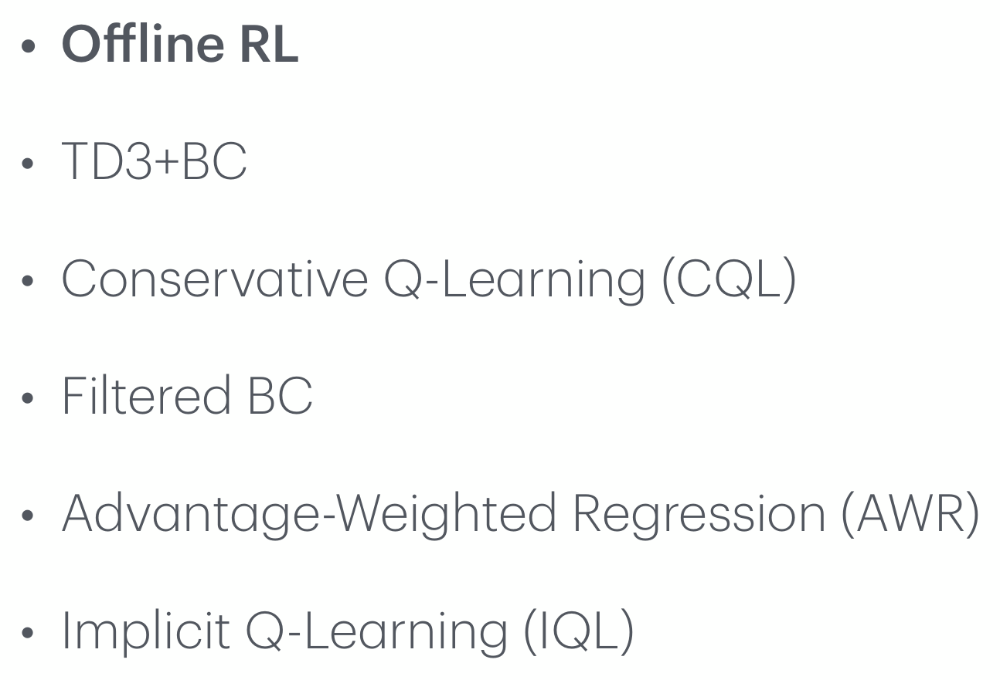
2. 오프라인 강화학습은 주어진 정적 데이터로 학습한다 (Offline RL Learns from Given Static Data)
2.1 온라인 강화학습과의 대비
지금까지의 강화학습은 모두 온라인(online)이었습니다. 슬라이드는 이를 두 단계의 반복으로 요약합니다.
- 데이터를 모은다 (collect data)
- 정책을 갱신한다 — 5회차의 PPO 같은 온폴리시 방법은 가장 최근 데이터(latest data)로, 6–7회차의 DQN·TD3·SAC 같은 오프폴리시 방법은 재생 버퍼에 쌓인 지금까지의 데이터 전체(data so far)로
그리고 다시 1번으로 돌아갑니다. 슬라이드 왼쪽의 회색 꺾인 화살표가 이 되돌아가는 고리입니다. 오프폴리시 방법이 과거 데이터를 재사용하더라도, 갱신된 정책이 새 데이터를 계속 보태는 고리 자체는 남아 있다는 점이 중요합니다.
오프라인 강화학습(offline RL)에는 이 고리가 없습니다.
- 오프라인 데이터셋이 주어진다 (offline dataset is given)
- 그 데이터만으로 정책을 학습한다 (train policy on offline data)
학습이 끝날 때까지 환경과 단 한 번도 상호작용하지 않습니다. 7절의 요약 슬라이드가 덧붙이듯 이 설정은 배치 강화학습(batch RL)이라고도 부릅니다.
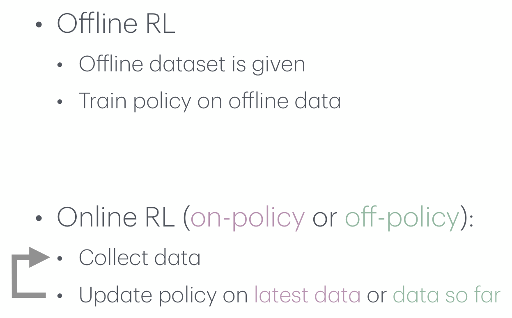
2.2 데이터셋과 행동 정책 (Behavior Policy)
오프라인 데이터셋은 전이(transition)들의 모음입니다.
\[ \mathcal{D} = \{(\mathbf{s}, \mathbf{a}, \mathbf{s}', r)\} \]
슬라이드는 이 데이터가 어떤 미지의 정책 \(\pi_\beta\)에서 수집되었다고 두고, 이를 행동 정책(behavior policy)이라 부릅니다. 각 원소가 생성되는 과정은 다음과 같습니다.
- \(\mathbf{s} \sim \pi_\beta(\tau)\): 상태는 \(\pi_\beta\)가 만들어 낸 궤적 분포에서 나옵니다. 즉 \(\pi_\beta\)를 따라 움직였을 때 자주 방문하는 상태일수록 데이터에 많이 들어 있습니다.
- \(\mathbf{a} \sim \pi_\beta(\cdot \mid \mathbf{s})\): 행동은 그 상태에서 \(\pi_\beta\)가 고른 것입니다.
- \(\mathbf{s}' \sim p(\cdot \mid \mathbf{s}, \mathbf{a})\): 다음 상태는 환경의 전이 확률을 따릅니다.
- \(r = r(\mathbf{s}, \mathbf{a})\): 보상도 함께 기록되어 있습니다.
슬라이드 오른쪽의 주석 “\(\pi_\beta\) may be a mixture of policies”도 짚어 둘 만합니다. 실제 데이터셋은 여러 사람의 시연, 학습 도중 여러 시점의 정책, 손으로 짠 규칙 기반 제어기 등이 섞인 경우가 많으므로, \(\pi_\beta\)는 하나의 깔끔한 정책이 아니라 이들의 혼합일 수 있습니다. 게다가 우리는 \(\pi_\beta\)의 식을 모릅니다 — 알 수 있는 것은 그것이 남긴 표본 \(\mathcal{D}\)뿐입니다.
2.3 목적함수는 그대로다
슬라이드의 마지막 줄은 “Offline RL objective is the same”입니다.
\[ \max_\theta \; \sum_t \mathbb{E}_{\tau \sim \pi_\theta(\tau)} \big[ r(\mathbf{s}_t, \mathbf{a}_t) \big] \]
2회차에서 본 강화학습의 목적함수 그대로이며, 여기서 \(\pi_\theta(\tau)\)는 정책 \(\pi_\theta\)가 만들어 내는 궤적 분포
\[ \pi_\theta(\tau) = p(\mathbf{s}_1) \prod_{t} \pi_\theta(\mathbf{a}_t \mid \mathbf{s}_t)\, p(\mathbf{s}_{t+1} \mid \mathbf{s}_t, \mathbf{a}_t) \]
입니다. 바뀐 것은 목적함수가 아니라 데이터의 출처입니다. 기댓값은 우리가 학습하는 정책 \(\pi_\theta\)의 궤적에 대해 취해야 하는데, 손에 쥔 표본은 행동 정책 \(\pi_\beta\)의 궤적 \(\pi_\beta(\tau)\)에서 나왔습니다. 그리고 \(\pi_\theta\)가 \(\pi_\beta\)보다 나아지려면 \(\pi_\beta\)와 다르게 행동해야 합니다. 이 간극이 이번 회차 전체를 관통하는 분포 이동(distribution shift)입니다.
오프라인 강화학습은 새로운 목표를 세우는 것이 아니라, 같은 목표를 더 불리한 조건에서 푸는 문제입니다. 온라인에서는 \(\pi_\theta\)가 바뀌면 그 정책으로 데이터를 새로 모아 간극을 메울 수 있었지만, 오프라인에서는 \(\pi_\theta\)가 \(\pi_\beta\)에서 멀어질수록 그 정책이 실제로 어떻게 될지 확인할 데이터가 줄어듭니다. 개선하려면 멀어져야 하고, 멀어질수록 판단 근거가 사라지는 이 긴장이 4절과 6절에서 구체적인 모습으로 드러납니다.
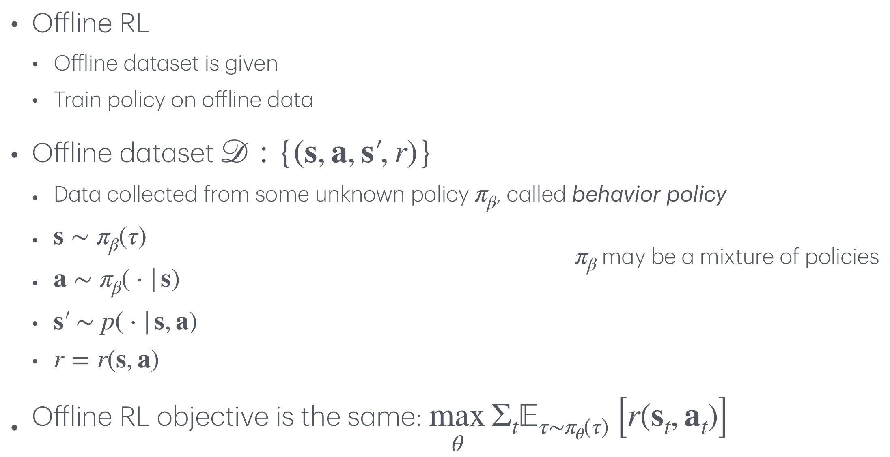
3. 오프라인 강화학습은 행동 복제와 무엇이 다른가 (How Is Offline RL Different from BC?)
정적 데이터로 정책을 학습하는 방법이라면 이미 하나 알고 있습니다. 1회차의 행동 복제(behavioral cloning, BC)는 데이터의 상태–행동 쌍을 지도학습으로 그대로 따라 합니다.
\[ \max_\pi \; \mathbb{E}_{(\mathbf{s}, \mathbf{a}) \sim \mathcal{D}} \big[ \log \pi(\mathbf{a} \mid \mathbf{s}) \big] \]
BC는 보상 \(r\)을 쓰지 않습니다. 데이터가 좋으면 좋은 정책이, 나쁘면 나쁜 정책이 나옵니다. 오프라인 강화학습은 같은 데이터에 보상까지 쓰며, 슬라이드는 그 덕분에 생기는 두 가지 차이를 꼽습니다.
3.1 궤적을 이어붙인다 (Stitching)
슬라이드의 그림에서 훈련 데이터에는 두 종류의 궤적만 있습니다 — A에서 B로 가는 궤적과 B에서 C로 가는 궤적입니다. 과제는 A에서 C로 가는 것인데, 데이터에는 A에서 출발해 C에 도착하는 궤적이 하나도 없습니다.
- BC는 A에서 시연을 따라 B로 갈 뿐, “B에 도착한 뒤 C로 가면 된다”는 것을 알 방법이 없습니다. 각 상태에서 데이터가 한 일을 그대로 따라 할 뿐이기 때문입니다.
- 오프라인 강화학습은 보상과 벨만 갱신으로 이 둘을 잇습니다. B→C 궤적에서 C에 도달해 받은 보상이 B 근처 상태의 가치를 높이고, A→B 궤적의 마지막 전이 \((\mathbf{s}, \mathbf{a}, \mathbf{s}' = \text{B 근처})\)의 표적값 \(r + \gamma V(\mathbf{s}')\)가 그 높아진 가치를 받아 A 쪽으로 다시 전파합니다. 결과적으로 정책은 A→B→C라는, 데이터에 통째로는 없던 경로를 따르게 됩니다.
이것이 이어붙이기(stitching)입니다. 동적 계획법의 표적값은 서로 다른 궤적이 같은 상태를 지나기만 하면 그 상태를 매개로 가치를 주고받을 수 있게 해 줍니다.
3.2 나쁜 데이터도 활용한다
BC에게 나쁜 시연은 독입니다. 데이터에 섞인 실패한 행동까지 똑같이 따라 하기 때문입니다. 오프라인 강화학습은 보상을 보므로, 나쁜 행동에서도 “이 행동은 낮은 보상으로 이어진다”는 정보를 얻습니다. 실패한 궤적도 그 상태에서 무엇을 하지 말아야 하는지 알려 주는 데이터가 됩니다. 12절의 D4RL 결과에서, 학습 도중의 미숙한 정책이 남긴 데이터(medium-replay)에서 BC가 크게 무너지는 반면 강화학습 방법들은 잘 버티는 것이 이 차이의 실례입니다.
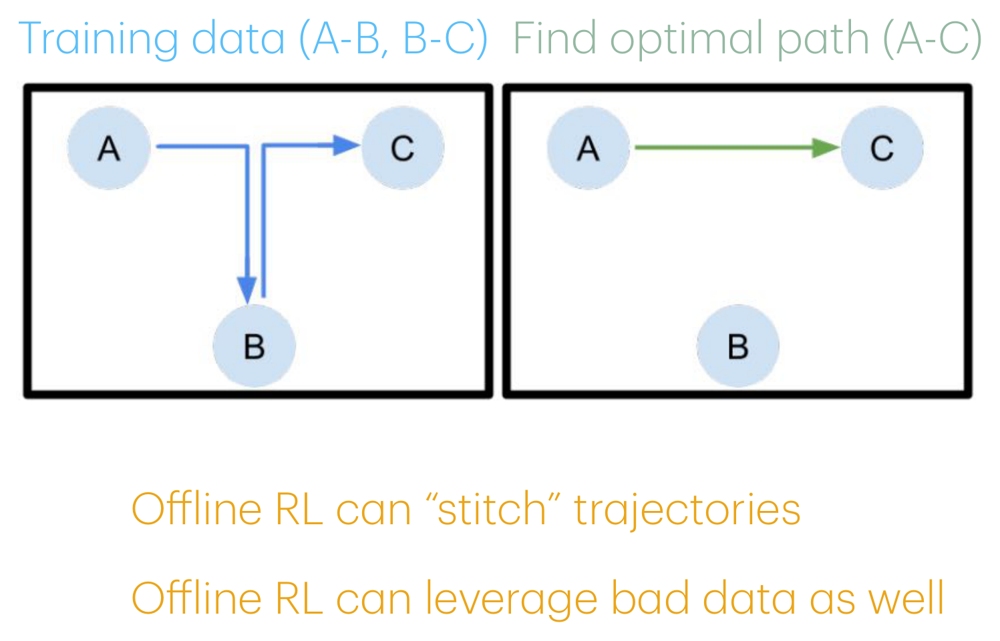
4. 오프라인 강화학습은 왜 어려운가 (Why Is Offline RL Hard?)
슬라이드의 출처는 Levine et al., Offline Reinforcement Learning: Tutorial, Review, and Perspectives on Open Problems, arXiv 2020입니다.
그림은 교차로에 다가가는 자동차입니다. 파란 화살표는 훈련 데이터에 있는 행동(좌회전, 우회전, 유턴)이고, 빨간 화살표는 학습 중인 정책이 시도해 보고 싶은 행동(직진해 길 건너편 경계에 부딪히기, 너무 일찍 우회전해 연석에 부딪히기)입니다. 빨간 화살표 끝에는 충돌을 뜻하는 폭발 표시가 있습니다.
정책이 묻습니다 — “이 행동은 좋은가, 나쁜가?” 슬라이드의 대답은 “오프라인이므로 우리는 결코 알 수 없다!”입니다. 데이터에 그 행동을 해 본 기록이 없으니 그 결과도 없습니다.
- 온라인 강화학습은 이 문제를 다룰 필요가 없습니다. 그냥 그 행동을 해 보고 무슨 일이 일어나는지 보면 됩니다. 충돌하면 낮은 보상을 받고, 다음부터 그 행동을 피하게 됩니다.
- 오프라인 강화학습은 본 적 없는 행동을 안전한 방식으로 다루면서도 데이터보다 잘해야 합니다.
“데이터보다 잘하라”는 요구는 데이터에 없는 행동을 하라는 뜻이고, “본 적 없는 행동을 안전하게 다루라”는 요구는 데이터에 없는 행동을 조심하라는 뜻입니다. 극단으로 가면 둘 다 실패합니다. 데이터에서 한 발짝도 벗어나지 않으면 3절의 BC와 같아져 개선이 없고, 마음껏 벗어나면 빨간 화살표처럼 확인할 수 없는 행동에 운명을 맡기게 됩니다. 이후의 모든 알고리즘은 이 둘 사이에서 어디에, 어떤 방식으로 선을 긋느냐의 차이입니다.
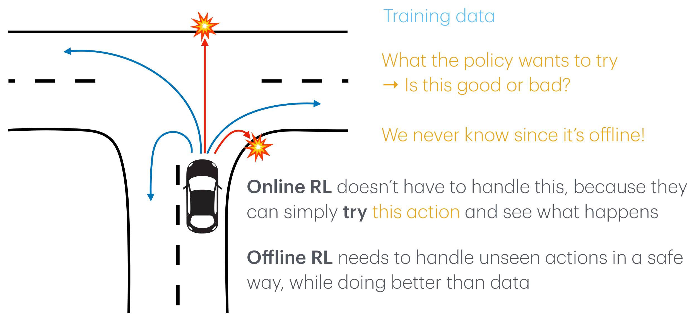
5. 오프라인 강화학습은 왜, 언제 유용한가 (Why, or When, Might Offline RL Be Useful?)
이렇게 어려운 문제를 왜 풀어야 할까요? 슬라이드는 세 가지 상황을 듭니다.
- 온라인 데이터 수집이 위험하거나, 안전하지 않거나, 비쌀 때: 의료(healthcare), 로봇(robotics), 자율주행(autonomous driving) 등. 학습 중인 미숙한 정책을 환자나 도로 위에서 시험해 볼 수는 없습니다.
- 이미 모은 데이터를 다시 모으지 않고 재사용하고 싶을 때: 이전 실험의 데이터, 다른 프로젝트의 데이터, 다른 기관의 데이터.
- 사람이나 기존 시스템이 모은 데이터셋을 활용하고 싶을 때: 데이터가 지금 학습 중인 정책이 아니라 다른 주체에 의해 수집된 경우입니다.
뒤의 두 항목을 묶은 주황 괄호에서 화살표가 내려와 질문 하나로 이어집니다 — “그냥 오프폴리시 알고리즘을 쓰면 되지 않을까?”
자연스러운 질문입니다. 6–7회차의 DQN·DDPG·TD3·SAC는 모두 오프폴리시이므로, 현재 정책이 모으지 않은 데이터로 학습하는 능력이 이미 있습니다. 재생 버퍼를 \(\mathcal{D}\)로 채우고 새 데이터를 더 넣지 않으면 그것이 곧 오프라인 강화학습이 아닐까요? 다음 절이 이 질문에 답합니다.
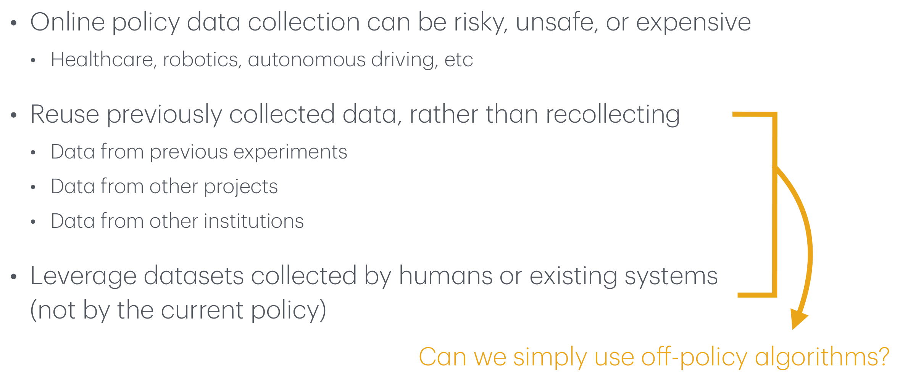
6. 오프폴리시 알고리즘을 그대로 쓰면 안 되는가 (Can We Simply Use Off-Policy Algorithms?)
6.1 문제의 항: \(\max\)가 데이터 밖을 고른다
Q-학습의 표적값을 다시 보겠습니다(슬라이드는 할인율 \(\gamma\)를 생략해 적었습니다).
\[ y_i \leftarrow r(\mathbf{s}_i, \mathbf{a}_i) + \max_{\mathbf{a}'_i} Q_\phi(\mathbf{s}'_i, \mathbf{a}'_i) \]
슬라이드는 빨간 \(\max\) 항에 주황 타원을 두르고 “이 항이 또다시 문제다!”라고 적습니다. “또다시”인 이유는 6회차에서 이미 이 항이 과대추정의 원인이었기 때문입니다. \(Q_\phi\)에 섞인 추정 오차 가운데 위로 튄 것을 \(\max\)가 골라내므로, 표적값은 체계적으로 부풀었습니다.
오프라인에서는 이 문제가 훨씬 심각해집니다. 슬라이드는 두 질문을 던집니다.
- 이것을 정적 데이터셋으로 최적화하면 무슨 일이 일어나는가?
- 데이터셋에 없는 행동 \(\mathbf{a}'\)에서 \(Q\)를 평가하면 무슨 일이 일어나는가?
아래 그림이 답입니다. 가로축은 다음 상태 \(\mathbf{s}'\)에서의 행동 \(\mathbf{a}'\), 세로축은 \(Q(\mathbf{s}', \mathbf{a}')\)입니다. 데이터가 있는 구간(초록, 데이터 지지집합(data support)) 안에서는 예측한 Q(파란 실선)가 참 Q(주황 점선)와 잘 맞습니다. 그러나 지지집합 밖(분홍 음영)에서는 두 곡선이 제멋대로 벌어지고, 특히 오른쪽에서 예측 Q가 참 Q보다 훨씬 높은 봉우리를 만듭니다. \(\max\)는 바로 그 봉우리(검은 화살표)를 고릅니다.
- Q-함수는 분포 밖(out-of-distribution, OOD) 행동에서 믿을 수 없습니다. 그 행동에 대한 데이터로 학습된 적이 없으니, 거기서의 값은 신경망이 아무렇게나 외삽한 결과입니다.
- \(\max\)는 Q-함수가 지나치게 낙관적인 행동을 찾아냅니다. 외삽 오차는 위로도 아래로도 튀지만, \(\max\)는 위로 튄 것만 골라냅니다.
- 값이 전파되면 Q 값은 크게 과대추정됩니다. 부풀려진 표적값으로 학습된 \(Q(\mathbf{s}, \mathbf{a})\)가 다시 그 앞 상태의 표적값에 쓰이기 때문입니다.
6.2 온라인에서는 왜 괜찮았는가
온라인에서도 같은 과대추정이 일어나지만, 고리가 그것을 바로잡습니다. Q가 어떤 행동을 과대평가하면 정책이 그 행동을 고르고, 그 행동을 실제로 해 본 데이터가 버퍼에 들어오며, 그 데이터가 과대평가된 값을 끌어내립니다. 4절의 표현을 빌리면 “해 보고 무슨 일이 일어나는지 보는” 과정이 자동으로 오차를 교정합니다. 오프라인에서는 이 교정 데이터가 영원히 들어오지 않으므로, 오차가 쌓이기만 합니다.
6.3 오차는 얼마나 커지는가: 단순화한 계산
전파의 효과를 가늠하기 위해 아주 단순한 모형을 생각해 보겠습니다. 매 벨만 갱신마다 \(\max\)가 분포 밖 행동을 골라 표적값에 \(\epsilon > 0\)만큼의 낙관적 오차를 더한다고 하고, 그 오차가 할인되어 다음 갱신에 그대로 실려 간다고 합시다. 고정점에서의 오차 \(e\)는
\[ e = \epsilon + \gamma e \quad\Longrightarrow\quad e = \frac{\epsilon}{1 - \gamma} \]
를 만족합니다. \(\gamma = 0.99\)이면 \(e = 100\epsilon\)입니다. 한 번의 외삽 오차는 작아도, 가치가 유효 시간 지평 \(1/(1-\gamma)\) 만큼 누적되며 백 배로 불어나는 셈입니다.
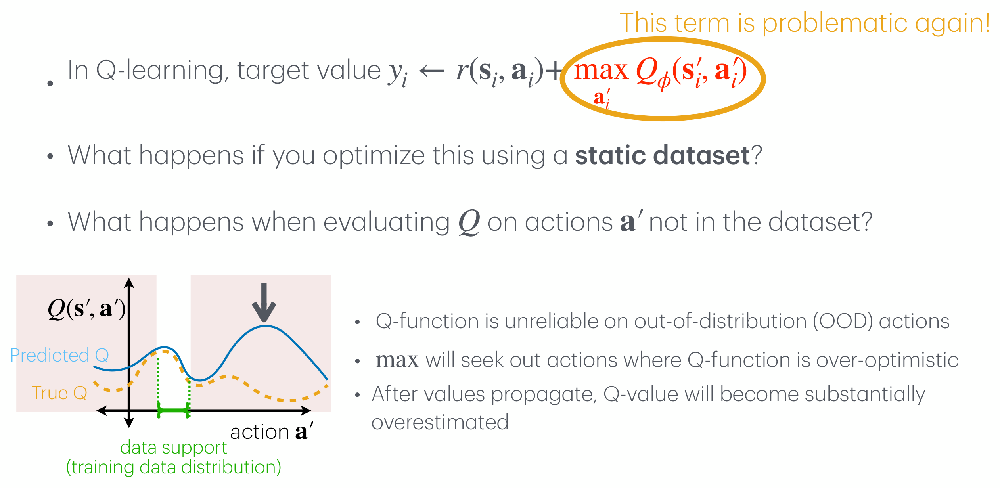
6.4 실험 증거: Q 추정치가 폭발한다
두 번째 슬라이드의 출처는 Kumar et al., Stabilizing Off-Policy Q-Learning via Bootstrapping Error Reduction, NeurIPS 2019입니다. 7회차의 SAC를 크기 \(n\)인 정적 데이터로 HalfCheetah 과제에서 학습시킨 결과입니다.
| 그래프 | 세로축 | 슬라이드의 이름 | 보이는 것 |
|---|---|---|---|
| 왼쪽 | 평균 반환값 (AverageReturn) | “How well it does” (실제로 얼마나 잘하는가) | 모든 \(n\)에서 0 아래, 대략 \(-100\)에서 \(-650\) 사이에 머문다 |
| 오른쪽 | \(\log(Q)\) | “How well it thinks it does” (스스로 얼마나 잘한다고 믿는가) | 학습이 진행될수록 계속 오른다 |
오른쪽 그래프의 세로축이 로그 눈금이라는 점이 핵심입니다. \(n = 1000\)(파랑)은 \(\log(Q)\)가 20 가까이 오르고, \(n = 100000\)(초록)도 학습 후반에 15 가까이 치솟습니다. 반환값이 음수인 과제에서 Q 추정치가 그 정도로 크다는 것은, Q-함수가 현실과 완전히 동떨어진 값을 믿고 있다는 뜻입니다. 슬라이드의 주황 글씨 그대로 “Q 추정치가 폭발합니다!”
\(n\)을 1000에서 100만까지 천 배로 늘려도 반환값은 어느 경우에도 0을 넘지 못합니다. 폭발의 크기도 \(n\)에 따라 일관되게 줄지 않아서, 10만 개(초록)가 1만 개(주황)보다 오히려 크게 부풉니다. 100만 개(빨강)에서 \(\log(Q)\)가 7 근처에 머무는 것도 반환값을 구해 주지는 못합니다. 문제의 원인이 표본의 양이 아니라, \(\max\)가 데이터가 덮지 않는 행동을 묻는다는 구조에 있기 때문입니다. 데이터가 아무리 많아도 \(\pi_\beta\)가 하지 않은 행동에 대한 정보는 늘지 않습니다.
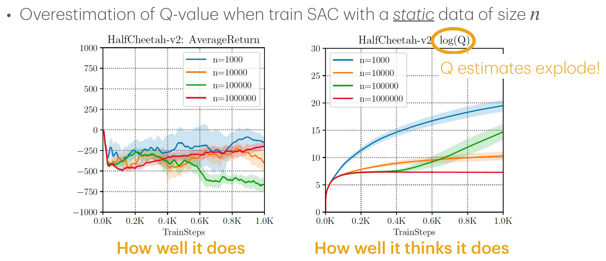
7. 오프라인 강화학습 요약 (Summary of Offline RL)
지금까지의 논의를 슬라이드는 네 개의 질문과 답으로 정리합니다.
| 질문 | 답 |
|---|---|
| 오프라인 강화학습(배치 강화학습)이란? | 정적(오프라인) 데이터셋으로 정책을 학습하는 것 |
| 왜 오프라인 강화학습인가? | 온라인 데이터는 비싸다. 오프라인 데이터를 재사용하는 것은 언제나 좋다 |
| 왜 어려운가? | 본 적 없는 행동을 안전하게 다루면서도 데이터보다 잘해야 한다 |
| 핵심 난제는? | \(\pi_\beta\)와 \(\pi_\theta\) 사이의 분포 이동 때문에 생기는 Q 값의 과대추정 |
그림의 제목 “Inaccurate prediction outside data support”(데이터 지지집합 밖에서의 부정확한 예측)가 네 번째 답을 그림 한 장으로 요약합니다.
1회차의 BC에서도 분포 이동이 문제였습니다. 그때의 이동은 상태에 있었습니다 — 학습된 정책이 작은 실수를 하면 전문가가 가 본 적 없는 상태에 들어가고, 거기서 실수가 쌓였습니다(공변량 이동). 오프라인 강화학습에서 핵심이 되는 이동은 행동에 있습니다. 학습 중에 \(\pi_\theta\)나 \(\max\)가 \(\pi_\beta\)가 고르지 않은 행동을 고르면, 그 행동의 Q 값이라는 학습 신호 자체가 오염됩니다. 배포 단계에서야 드러나는 BC의 문제와 달리, 이 문제는 학습 도중에 일어나 학습 자체를 망가뜨린다는 점에서 더 직접적입니다.
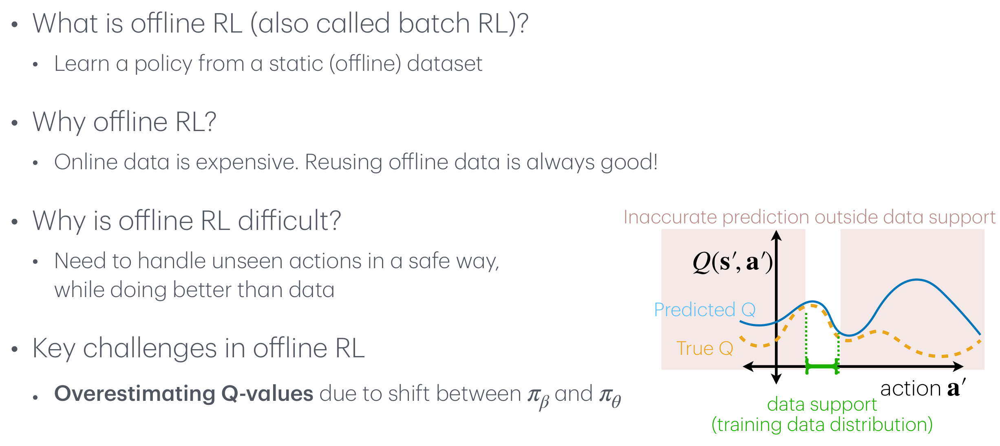
8. 다음 행동을 행동 정책 가까이에 묶어 두기 (1. Constrain \(\mathbf{a}'\) to Stay Close to Behavior Policy)
장 구분 슬라이드(11쪽)가 이 부분의 질문을 던집니다 — “오프라인 강화학습에서 과대추정을 어떻게 완화할 것인가?” 그리고 “이것이 오프라인 강화학습의 핵심 목표다!”라고 덧붙입니다. 슬라이드는 두 가지 접근을 번호로 제시하는데, 이 절이 첫 번째입니다.
슬라이드의 출처는 Fujimoto et al., A Minimalist Approach to Offline Reinforcement Learning, NeurIPS 2021입니다.
8.1 문제와 해법
- 문제: Q-함수는 분포 밖 행동에서 믿을 수 없다.
- 해법: 정책 \(\pi\)를 행동 정책 \(\pi_\beta\) 가까이에 둔다.
\(\pi\)가 \(\pi_\beta\)와 비슷한 행동만 고른다면, Q가 평가되는 행동도 데이터 근처에 머물 것입니다. 그런데 \(\pi_\beta\)는 모릅니다(2.2절). 슬라이드의 답은 간단합니다 — “\(\pi\)를 데이터에 맞춰라!” \(\pi_\beta\)의 식은 몰라도 그것이 남긴 \((\mathbf{s}, \mathbf{a})\) 쌍은 있으므로, \(\pi\)가 그 쌍을 따라 하도록 만들면 됩니다. 그것이 곧 BC입니다.
8.2 TD3+BC
7회차 TD3의 정책 갱신은 비평가의 Q를 최대화하는 것이었습니다.
\[ \pi = \arg\max_\pi \; \mathbb{E}_{\mathbf{s} \sim \mathcal{D}} \big[ Q(\mathbf{s}, \pi(\mathbf{s})) \big] \]
TD3+BC는 여기에 BC 항 하나를 더합니다.
\[ \pi = \arg\max_\pi \; \mathbb{E}_{(\mathbf{s}, \mathbf{a}) \sim \mathcal{D}} \Big[ \lambda\, Q(\mathbf{s}, \pi(\mathbf{s})) - \big(\pi(\mathbf{s}) - \mathbf{a}\big)^2 \Big] \]
- \((\pi(\mathbf{s}) - \mathbf{a})^2\) — BC 항: 결정적 정책의 출력이 데이터의 행동 \(\mathbf{a}\)에서 얼마나 떨어져 있는지를 잽니다. 행동이 벡터이면 \(\lVert \pi(\mathbf{s}) - \mathbf{a} \rVert^2\)입니다. 이 항이 정말 BC인 이유는, 평균이 \(\pi(\mathbf{s})\)이고 분산이 \(\sigma^2\)로 고정된 가우시안 정책의 음의 로그 가능도가 \[ -\log \mathcal{N}\big(\mathbf{a};\, \pi(\mathbf{s}),\, \sigma^2 I\big) = \frac{1}{2\sigma^2} \lVert \mathbf{a} - \pi(\mathbf{s}) \rVert^2 + \text{const} \] 이기 때문입니다. 즉 제곱 오차를 줄이는 것은 3절의 \(\log \pi(\mathbf{a} \mid \mathbf{s})\)를 키우는 것과 같습니다.
- \(\lambda\) — 균형 계수: 두 항의 상대적 무게를 정합니다. \(\lambda \to 0\)이면 순수한 BC, \(\lambda \to \infty\)이면 순수한 TD3입니다. 슬라이드가 \(\lambda\)와 BC 항에만 연한 주황 바탕을 칠한 것은, TD3에서 바뀐 것이 이 둘뿐이라는 표시입니다.
- 기댓값의 범위: TD3는 상태만 있으면 되었지만(\(\mathbf{s} \sim \mathcal{D}\)), BC 항에는 데이터의 행동이 필요하므로 상태–행동 쌍 \((\mathbf{s}, \mathbf{a}) \sim \mathcal{D}\)에 대한 기댓값으로 바뀌었습니다.
이름 그대로 TD3에 BC 항 하나를 더한 것이며, 슬라이드가 보여 주는 변경은 이 정책 갱신 식 하나뿐입니다. BC 항이 정책을 데이터 근처에 붙잡아 두면, 정책 갱신에서 평가되는 \(Q(\mathbf{s}, \pi(\mathbf{s}))\)뿐 아니라 비평가의 표적값에 들어가는 다음 행동 \(\pi(\mathbf{s}')\)도 데이터 근처에 머물게 됩니다. 절 제목이 “\(\mathbf{a}'\)을 행동 정책 가까이에 묶어 두기”인 이유가 이것입니다 — 6절에서 문제였던 것은 표적값의 다음 행동 \(\mathbf{a}'\)이었습니다.
원 논문의 제목처럼, TD3+BC는 오프라인 강화학습을 위해 새로운 구조를 만들지 않습니다. \(\pi_\beta\)를 따로 추정하는 생성 모형도, 분포 사이의 거리를 재는 복잡한 제약도 없이, 이미 잘 작동하는 온라인 알고리즘의 정책 손실에 지도학습 손실 한 줄을 더할 뿐입니다. 이 단순함이 장점(13절의 “intuitive”)이자, 9절에서 보듯 한계의 원천이기도 합니다.
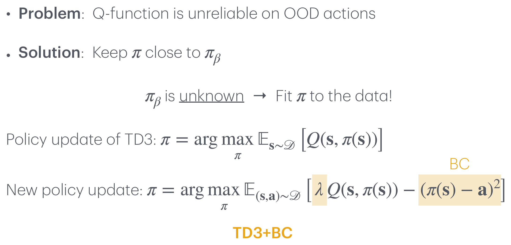
9. 보수적 Q 추정 (2. Conservative Q Estimation)
두 번째 접근으로 넘어가기 전에, 슬라이드는 첫 번째 접근의 한계를 먼저 짚습니다.
9.1 정책 제약 방식의 두 가지 문제
정책을 \(\pi_\beta\) 가까이에 두는 정책 제약(policy constraint) 방식은 양쪽으로 실패할 수 있습니다.
- 너무 비관적이다 (예: \(\pi_\beta\)가 무작위 정책일 때): 데이터가 무작위 행동으로 이루어져 있다면, 그 행동을 따라 하라는 제약은 정책을 무작위성 쪽으로 끌어당깁니다. 데이터에는 보상 정보가 있어서 어떤 행동이 좋았는지 알 수 있는데도, 제약이 그 정보를 활용하지 못하게 막는 셈입니다.
- 충분히 비관적이지 않다 (예: \(\pi\)가 여전히 데이터에서 조금 벗어나 과대추정을 일으킬 때): TD3+BC의 목적함수는 Q를 키우는 것과 BC 손실을 줄이는 것 사이의 거래입니다. 데이터 바로 옆에 가짜로 높은 Q 봉우리가 있다면, 정책은 약간의 BC 손실을 치르고 그쪽으로 기울 수 있고, 그 “약간”의 이탈이 6절의 과대추정을 다시 불러옵니다.
두 실패는 같은 뿌리에서 나옵니다. 정책 제약은 “데이터와 얼마나 가까운가”를 재는데, 정말 중요한 것은 “Q 값을 믿을 수 있는가”입니다. 무작위 데이터 근처라도 Q가 정확하면 벗어나도 되고, 데이터 바로 옆이라도 Q가 틀렸으면 벗어나서는 안 됩니다.
9.2 두 가지 선택지
그래서 슬라이드는 정책이 아니라 Q 쪽을 고치는 두 선택지를 제시합니다.
- 선택지 1: 분포 밖 행동이 결코 높은 값을 갖지 않도록 Q를 학습한다. 주황 밑줄이 그어진 이 선택지가 바로 보수적 Q-학습(Conservative Q-Learning, CQL)입니다(10–11절).
- 선택지 2: 데이터셋에 없는 행동을 아예 평가하지 않는다. 이 선택지는 14절에서 다시 등장해 IQL(17–20절)로 이어집니다.
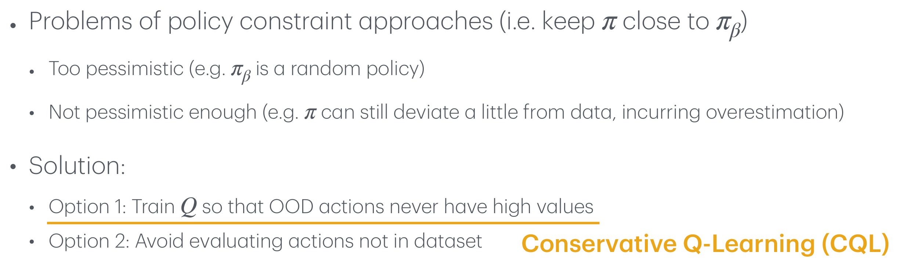
10. 보수적 Q-함수 학습 (Learning Conservative Q-Functions)
선택지 1이 무엇을 노리는지 두 그래프가 보여 줍니다. 두 그래프 모두 가로축은 행동 \(a\), 세로축은 \(Q(s, a)\)이며, 두 보라색 점선 사이가 데이터가 있는 행동 지지집합(action support), 주황 점선이 실제 Q-함수입니다.
- 왼쪽 — 순진한 Q-함수 (빨강): 지지집합 안에서는 실제 Q와 비슷하지만, 바깥에서는 왼쪽에 높은 봉우리, 오른쪽에 또 하나의 봉우리를 만들며 실제 Q보다 훨씬 위로 솟습니다. “순진한 Q-학습은 본 적 없는 행동을 과대추정한다.”
- 오른쪽 — 보수적 Q-함수 (파랑): 지지집합 안에서는 실제 Q와 거의 같고, 바깥에서는 회색 아래쪽 화살표가 보여 주듯 실제 Q 아래로 내려가 있습니다. “본 적 없는 행동의 Q 값을 과소추정하자.”
이렇게 만들어 두면 정책에 따로 제약을 걸 필요가 없습니다. 정책이 Q를 최대화하기만 해도, 지지집합 밖의 Q가 낮으므로 자연스럽게 지지집합 안의 행동을 고르게 됩니다. 9.1절의 표현으로는, 데이터와의 “거리”가 아니라 Q 값 자체가 정책을 붙잡는 것입니다.
정책은 Q가 높은 행동을 고르므로, 두 종류의 오차가 정책에 미치는 영향은 비대칭입니다. 어떤 행동을 과대추정하면 정책이 그 행동을 고르고, 실제로는 나쁜 그 행동이 그대로 실행됩니다(4절의 충돌). 반대로 과소추정하면 정책이 그 행동을 고르지 않을 뿐이고, 최악의 경우에도 잃는 것은 “그 행동이 실은 좋았다면 얻었을 개선”입니다. 확인할 수 없는 행동에 대해서는 차라리 나쁘게 믿는 편이 안전합니다.
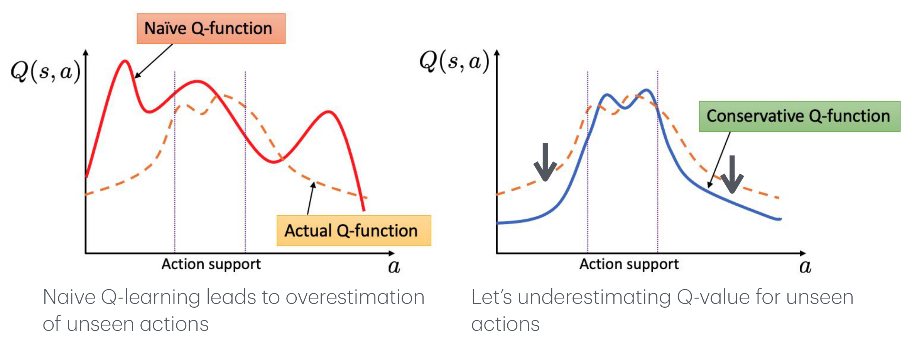
11. 보수적 Q-학습 (Conservative Q-Learning, CQL)
10절의 그림을 손실함수로 만드는 과정을 슬라이드는 네 장(15–18쪽)에 걸쳐 한 항씩 쌓아 갑니다.
11.1 1단계: 큰 Q 값을 밀어 내리기
\[ \begin{aligned} \hat{Q}^\pi = \arg\min_Q \max_\mu \; & \mathbb{E}_{(\mathbf{s}, \mathbf{a}, \mathbf{s}') \sim \mathcal{D}} \Big[ \big( Q(\mathbf{s}, \mathbf{a}) - \big( r(\mathbf{s}, \mathbf{a}) + \gamma\, \mathbb{E}_\pi [ Q(\mathbf{s}', \mathbf{a}') ] \big) \big)^2 \Big] \\ & + \alpha\, \mathbb{E}_{\mathbf{s} \sim \mathcal{D},\, \mathbf{a} \sim \mu(\cdot \mid \mathbf{s})} \big[ Q(\mathbf{s}, \mathbf{a}) \big] \end{aligned} \]
- 첫 항 — 표준 비평가 갱신 (standard critic update): 정책 \(\pi\)의 Q-함수를 벨만 오차로 학습하는 평소의 항입니다. 표적값이 \(\max\)가 아니라 \(\mathbb{E}_\pi\), 곧 다음 행동 \(\mathbf{a}' \sim \pi(\cdot \mid \mathbf{s}')\)에 대한 기댓값이라는 점에서 7회차 SAC의 비평가처럼 현재 정책의 가치를 학습하는 정책 평가입니다. 그래서 결과물도 \(\hat{Q}^\pi\)로 표기됩니다.
- 둘째 항 — 큰 Q 값 밀어 내리기 (push down large Q-values): 분포 \(\mu\)에서 뽑은 행동의 Q를 최소화합니다. 그런데 바깥의 \(\max_\mu\)는 이 항을 가장 크게 만드는 \(\mu\)를 고르므로, \(\mu\)는 Q가 가장 높은 행동들에 확률을 몰아줍니다. 결국 이 항은 “지금 Q가 가장 높다고 믿는 행동들”의 Q를 끌어내립니다. 그림의 하늘색 원과 화살표가 가리키는 지점 — 데이터 밖의 가짜 봉우리 — 이 정확히 그런 곳입니다.
슬라이드는 이 목적함수로 학습한 \(\hat{Q}^\pi\)에 대해, \(\alpha\)가 충분히 크면 \(\hat{Q}^\pi \le Q^\pi\)임을 보일 수 있다고 말합니다. 모든 상태–행동 쌍에서 참값의 하한이 되는 것입니다. 그러나 곧바로 “너무 비관적일 수 있다. 이 하한을 더 조일 수 있을까?”라고 묻습니다. 데이터에 있는 행동의 Q까지 함께 끌어내리는 것은 불필요한 손해이기 때문입니다.
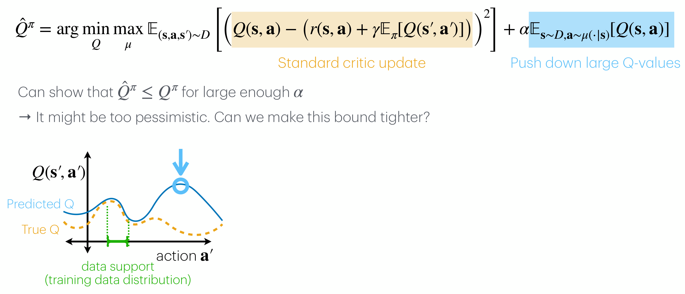
11.2 2단계: 데이터의 Q 값은 밀어 올리기
하한을 조이는 방법은 항 하나를 더 빼는 것입니다.
\[ \cdots \; - \alpha\, \mathbb{E}_{(\mathbf{s}, \mathbf{a}) \sim \mathcal{D}} \big[ Q(\mathbf{s}, \mathbf{a}) \big] \]
데이터에 있는 \((\mathbf{s}, \mathbf{a})\)의 Q 값을 밀어 올리는 항입니다(push up Q-values for \((\mathbf{s}, \mathbf{a})\) in data). 두 정규화 항을 합쳐 보면
\[ \alpha \Big( \underbrace{\mathbb{E}_{\mathbf{s} \sim \mathcal{D},\, \mathbf{a} \sim \mu}[Q(\mathbf{s}, \mathbf{a})]}_{\text{Q가 최선이라 믿는 행동}} - \underbrace{\mathbb{E}_{(\mathbf{s}, \mathbf{a}) \sim \mathcal{D}}[Q(\mathbf{s}, \mathbf{a})]}_{\text{데이터가 실제로 한 행동}} \Big) \]
으로, “Q가 최선이라고 믿는 행동의 가치”와 “데이터 행동의 가치” 사이의 격차에 벌점을 주는 형태입니다. \(\mu\)가 데이터와 같은 행동을 고른다면 두 항이 상쇄되어 벌점이 없고, \(\mu\)가 데이터에 없는 행동을 고를 때만 벌점이 생깁니다.
대가로 보장은 약해집니다. 슬라이드의 두 문장은 다음과 같습니다.
- 더 이상 모든 \((\mathbf{s}, \mathbf{a})\)에 대해 \(\hat{Q}^\pi \le Q^\pi\)가 보장되지는 않는다. (데이터 행동의 Q는 참값보다 높아질 수도 있습니다.)
- 그러나 데이터의 모든 상태 \(\mathbf{s} \in \mathcal{D}\)에 대해 \(\mathbb{E}[\hat{Q}^\pi(\mathbf{s}, \mathbf{a})] \le \mathbb{E}[Q^\pi(\mathbf{s}, \mathbf{a})]\)는 보장된다. 여기서 기댓값은 정책 \(\pi\)의 행동에 대한 것이므로, 곧 상태 가치의 하한 \(\hat{V}^\pi(\mathbf{s}) \le V^\pi(\mathbf{s})\)입니다.
정책 개선에 쓰이는 것은 결국 정책이 고르는 행동들의 평균적인 가치이므로, 하나하나가 아니라 평균에서 하한이면 충분합니다. 그림에서도 분홍 원이 둘린 데이터 지지집합의 예측 Q가 분홍 화살표를 따라 위로 올라가고, 나머지는 참값 아래에 깔려 있습니다.
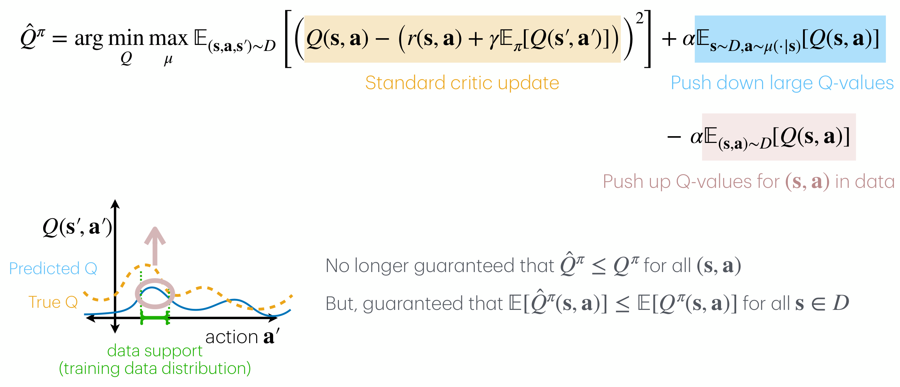
11.3 보충 유도: 표 형식 경우에서 두 보장이 나오는 이유
슬라이드는 두 보장을 결과로만 제시합니다. 상태와 행동이 유한한 표 형식(tabular) 경우로 단순화하면 두 보장이 어디서 나오는지 직접 계산할 수 있습니다.
설정. 데이터의 상태 분포를 \(d(\mathbf{s})\), 행동 정책을 \(\pi_\beta(\mathbf{a} \mid \mathbf{s})\)라 하면 \((\mathbf{s}, \mathbf{a}) \sim \mathcal{D}\)의 확률은 \(d(\mathbf{s})\pi_\beta(\mathbf{a} \mid \mathbf{s})\)입니다. 모든 행동이 데이터에 한 번 이상 나온다고(\(\pi_\beta(\mathbf{a} \mid \mathbf{s}) > 0\)) 가정하고, \(k\)번째 반복의 표적값 \(y(\mathbf{s}, \mathbf{a}) = r(\mathbf{s}, \mathbf{a}) + \gamma\, \mathbb{E}_{\mathbf{s}'}\mathbb{E}_{\mathbf{a}' \sim \pi}[\hat{Q}^k(\mathbf{s}', \mathbf{a}')]\)은 고정된 값으로 둡니다. \(\mu\)도 고정합니다.
한 칸의 손실. 표 형식에서는 각 \(Q(\mathbf{s}, \mathbf{a})\)가 독립된 변수이므로, 목적함수 가운데 이 한 칸에 걸린 부분만 모으면
\[ \begin{aligned} \ell\big(Q(\mathbf{s}, \mathbf{a})\big) &= d(\mathbf{s})\pi_\beta(\mathbf{a} \mid \mathbf{s}) \big(Q(\mathbf{s}, \mathbf{a}) - y(\mathbf{s}, \mathbf{a})\big)^2 \\ &\quad + \alpha\, d(\mathbf{s}) \mu(\mathbf{a} \mid \mathbf{s})\, Q(\mathbf{s}, \mathbf{a}) - \alpha\, d(\mathbf{s}) \pi_\beta(\mathbf{a} \mid \mathbf{s})\, Q(\mathbf{s}, \mathbf{a}) \end{aligned} \]
입니다. \(Q(\mathbf{s}, \mathbf{a})\)로 미분해 0으로 두면(인자는 생략)
\[ 2\, d\, \pi_\beta\, (Q - y) + \alpha\, d\, (\mu - \pi_\beta) = 0 \]
이고, 이를 \(Q\)에 대해 풀면
\[ \hat{Q}^{k+1}(\mathbf{s}, \mathbf{a}) = y(\mathbf{s}, \mathbf{a}) - \frac{\alpha}{2} \cdot \frac{\mu(\mathbf{a} \mid \mathbf{s}) - \pi_\beta(\mathbf{a} \mid \mathbf{s})}{\pi_\beta(\mathbf{a} \mid \mathbf{s})} \]
를 얻습니다. 밀어 올리기 항이 없는 11.1절의 경우는 분자에서 \(-\pi_\beta\)를 지운
\[ \hat{Q}^{k+1}(\mathbf{s}, \mathbf{a}) = y(\mathbf{s}, \mathbf{a}) - \frac{\alpha}{2} \cdot \frac{\mu(\mathbf{a} \mid \mathbf{s})}{\pi_\beta(\mathbf{a} \mid \mathbf{s})} \]
입니다.
1단계의 보장 (모든 칸에서 하한). 벌점 \(\frac{\alpha}{2}\mu/\pi_\beta\)는 항상 0 이상이므로 매 반복의 결과가 표적값 이하이고, 벨만 갱신은 단조(작은 Q를 넣으면 작은 표적이 나옴)이므로 반복의 고정점에서도 \(\hat{Q}^\pi \le Q^\pi\)가 모든 칸에서 성립합니다. 벌점은 \(\pi_\beta\)가 작을수록, 곧 데이터에 드문 행동일수록 커집니다 — 분포 밖 행동이 가장 세게 눌린다는 10절의 그림 그대로입니다.
2단계의 보장 (평균에서 하한). 이제 벌점의 분자 \(\mu - \pi_\beta\)는 부호가 바뀔 수 있습니다. \(\pi_\beta > \mu\)인 행동(데이터가 \(\mu\)보다 자주 한 행동)은 오히려 밀어 올려집니다. 그런데 \(\mu\)의 행동에 대해 평균을 내면
\[ \begin{aligned} \sum_{\mathbf{a}} \mu(\mathbf{a} \mid \mathbf{s}) \frac{\mu(\mathbf{a} \mid \mathbf{s}) - \pi_\beta(\mathbf{a} \mid \mathbf{s})}{\pi_\beta(\mathbf{a} \mid \mathbf{s})} &= \sum_{\mathbf{a}} \frac{\mu^2}{\pi_\beta} - 1 \\ &= \sum_{\mathbf{a}} \frac{\big(\mu(\mathbf{a} \mid \mathbf{s}) - \pi_\beta(\mathbf{a} \mid \mathbf{s})\big)^2}{\pi_\beta(\mathbf{a} \mid \mathbf{s})} \;\ge\; 0 \end{aligned} \]
입니다. 두 번째 등호는 오른쪽을 전개하면 \(\sum \mu^2/\pi_\beta - 2\sum \mu + \sum \pi_\beta = \sum \mu^2/\pi_\beta - 1\)이 되는 데서 나옵니다. 마지막 합은 \(\mu\)와 \(\pi_\beta\) 사이의 카이제곱 발산이며 항상 0 이상입니다. 따라서 \(\mu\)를 평가하려는 정책 \(\pi\)와 같게 두면, 상태 가치 \(\hat{V}^{k+1}(\mathbf{s}) = \mathbb{E}_{\mathbf{a} \sim \pi}[\hat{Q}^{k+1}(\mathbf{s}, \mathbf{a})]\)는 원래의 벨만 갱신에서 0 이상의 벌점을 뺀 것이 되고, 고정점에서 \(\hat{V}^\pi(\mathbf{s}) \le V^\pi(\mathbf{s})\)입니다. 칸 하나하나는 올라갈 수 있어도 평균은 하한이라는, 슬라이드의 두 문장이 정확히 이것입니다.
위의 계산은 표적값을 정확히 안다고 가정했으므로 \(\alpha > 0\)이기만 하면 하한이 나옵니다. 실제로는 유한한 데이터에서 추정한 벨만 갱신에 표본 오차가 섞이고, 그 오차는 위로도 튈 수 있습니다. 벌점이 이 오차까지 이기려면 \(\alpha\)가 그만큼 커야 하며, 슬라이드의 “for large enough \(\alpha\)”는 이 조건을 가리킵니다.
11.4 3단계: \(\mu\)는 어떻게 찾고, 그 항은 어떻게 계산하는가
남은 문제는 \(\max_\mu\)입니다. 슬라이드는 하늘색 바탕으로 \(\max_\mu\)와 밀어 내리기 항을 함께 칠하고 “\(\mu\)는 어떻게 찾고 이 항은 어떻게 계산하는가?”라고 묻습니다. 답은 정규화항 하나를 더하는 것입니다.
\[ \cdots \; + R(\mu), \qquad R(\mu) = \mathbb{E}_{\mathbf{s} \sim \mathcal{D}} \big[ \mathcal{H}\big(\mu(\cdot \mid \mathbf{s})\big) \big] \]
\(\mathcal{H}\)는 엔트로피입니다. 7회차 SAC의 최대 엔트로피 목적함수와 같은 종류의 항으로, 이것을 더하면 \(\mu\)에 대한 최대화가 닫힌 해를 갖습니다.
유도. 상태 \(\mathbf{s}\) 하나를 고정하고 \(\mu\)에 걸린 부분을 정리합니다. 이 유도에서는 \(\mathbf{s}\)를 생략해 \(\mu(\mathbf{a}) = \mu(\mathbf{a} \mid \mathbf{s})\), \(Q(\mathbf{a}) = Q(\mathbf{s}, \mathbf{a})\)로 쓰고, \(Z = \sum_{\mathbf{a}} \exp Q(\mathbf{a})\)라 두면
\[ \begin{aligned} \mathbb{E}_{\mathbf{a} \sim \mu}[Q(\mathbf{a})] + \mathcal{H}(\mu) &= \sum_{\mathbf{a}} \mu(\mathbf{a}) \big( Q(\mathbf{a}) - \log \mu(\mathbf{a}) \big) \\ &= -\sum_{\mathbf{a}} \mu(\mathbf{a}) \log \frac{\mu(\mathbf{a})}{\exp Q(\mathbf{a}) / Z} + \log Z \sum_{\mathbf{a}} \mu(\mathbf{a}) \\ &= \log Z - D_{\mathrm{KL}}\big( \mu \,\Vert\, \exp Q / Z \big) \end{aligned} \]
입니다. 둘째 줄은 \(\log \mu - Q = \log \frac{\mu}{\exp Q / Z} - \log Z\)로 쓴 것이고, 셋째 줄은 \(\sum \mu = 1\)을 쓴 것입니다. KL 발산은 0 이상이고 두 분포가 같을 때만 0이므로,
- 최적의 \(\mu\): \(\mu^*(\mathbf{a} \mid \mathbf{s}) = \dfrac{\exp Q(\mathbf{s}, \mathbf{a})}{Z(\mathbf{s})} \propto \exp Q(\mathbf{s}, \mathbf{a})\) — 슬라이드의 “\(\mu(\mathbf{a} \mid \mathbf{s}) \propto \exp(Q(\mathbf{s}, \mathbf{a}))\)”
- 최댓값: \(\log Z(\mathbf{s}) = \log \sum_{\mathbf{a}} \exp Q(\mathbf{s}, \mathbf{a})\) — 슬라이드의 “\(\mathbb{E}_{\mathbf{s} \sim \mathcal{D},\, \mathbf{a} \sim \mu}[Q] + R(\mu) = \mathbb{E}_{\mathbf{s} \sim \mathcal{D}} \log \sum_{\mathbf{a}} \exp(Q(\mathbf{s}, \mathbf{a}))\)”
를 얻습니다. 이렇게 \(\max_\mu\)가 사라지고, 밀어 내리기 항은 로그-합-지수(log-sum-exp) 하나로 바뀝니다.
로그-합-지수는 \(\max\)의 부드러운 버전입니다. 행동이 \(|\mathcal{A}|\)개라면
\[ \max_{\mathbf{a}} Q(\mathbf{s}, \mathbf{a}) \;\le\; \log \sum_{\mathbf{a}} \exp Q(\mathbf{s}, \mathbf{a}) \;\le\; \max_{\mathbf{a}} Q(\mathbf{s}, \mathbf{a}) + \log |\mathcal{A}| \]
이므로(가장 큰 항 하나만 남기면 왼쪽, 모든 항을 가장 큰 항으로 바꾸면 오른쪽), 이 항을 줄이는 것은 대략 가장 큰 Q 값을 끌어내리는 것입니다. 11.1절의 “큰 Q 값을 밀어 내린다”는 의도가 그대로 보존됩니다.
계산은 행동 공간에 따라 다릅니다.
- 이산 행동 공간: 모든 행동의 Q를 구해 \(\log \sum_{\mathbf{a}} \exp Q\)를 정확히 계산할 수 있습니다.
- 연속 행동 공간: 합(적분)을 정확히 구할 수 없으므로, 행동을 10개 남짓 뽑아 근사합니다.
엄밀히 따지면 \(\alpha\, \mathbb{E}_\mu[Q] + \mathcal{H}(\mu)\)의 최댓값은 \(\log \sum \exp(\alpha Q)\)이지 \(\alpha \log \sum \exp Q\)가 아닙니다. 슬라이드의 최종식(11.5절)처럼 \(\alpha\)가 로그-합-지수 바깥에 곱해지려면 정규화항도 \(\alpha\, \mathcal{H}(\mu)\)로 두어, \(\alpha(\mathbb{E}_\mu[Q] + \mathcal{H}(\mu))\) 전체를 최대화한다고 읽어야 합니다. 위 유도는 이 괄호 안을 다룬 것입니다.
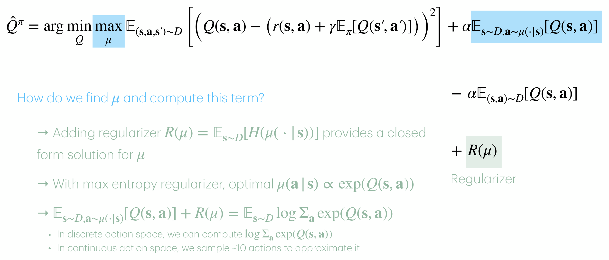
11.5 4단계: 최종 목적함수와 알고리즘
세 단계를 합친 것이 CQL 손실 \(L_{CQL}\)입니다.
\[ \begin{aligned} \hat{Q}^\pi = \arg\min_Q \; & \mathbb{E}_{(\mathbf{s}, \mathbf{a}, \mathbf{s}') \sim \mathcal{D}} \Big[ \big( Q(\mathbf{s}, \mathbf{a}) - \big( r(\mathbf{s}, \mathbf{a}) + \gamma\, \mathbb{E}_\pi [ Q(\mathbf{s}', \mathbf{a}') ] \big) \big)^2 \Big] \\ & + \alpha \log \sum_{\mathbf{a}} \exp\big(Q(\mathbf{s}, \mathbf{a})\big) - \alpha\, \mathbb{E}_{(\mathbf{s}, \mathbf{a}) \sim \mathcal{D}} \big[ Q(\mathbf{s}, \mathbf{a}) \big] \end{aligned} \]
슬라이드는 로그-합-지수 항 앞의 \(\mathbb{E}_{\mathbf{s} \sim \mathcal{D}}\)를 생략해 적었지만, 11.4절의 유도대로 이 항도 데이터 상태에 대한 기댓값입니다. \(\max_\mu\)는 이제 식에서 사라졌습니다.
알고리즘은 7회차 SAC의 고리에서 비평가 손실 한 줄만 바꾼 것입니다.
- \(\hat{Q}^\pi\)를 \(\mathcal{D}\)로 \(L_{CQL}\)을 써서 갱신한다.
- 정책 \(\pi\)를 SAC로 갱신한다.
- 1로 돌아간다.
슬라이드의 주황 글씨 그대로 “SAC에서 \(L_Q\)를 \(L_{CQL}\)로 바꾸기만 하면 됩니다.” 그리고 “HW5에서 CQL을 직접 구현하게 됩니다!”
| 장점 | 단점 |
|---|---|
| 아이디어가 단순하다 | \(\alpha\) 조정이 결정적이다 |
| 실제로 잘 작동한다 | 몇 가지 요령이 필요하다 (BC 사전학습, 로그-합-지수 추정) |
\(\alpha\)가 작으면 6절의 과대추정이 되살아나고, 크면 11.1절의 “너무 비관적인” 쪽으로 기웁니다. 요령 가운데 로그-합-지수 추정은 11.4절의 연속 행동 표본 근사를 가리키고, BC 사전학습은 정책을 처음에 BC로 미리 학습시켜 출발점을 데이터 근처에 두는 것입니다.
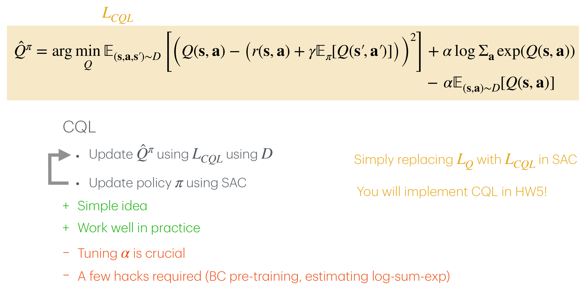
12. 오프라인 강화학습 방법은 어떻게 평가하는가 (How Do We Evaluate Offline RL Methods?)
장 구분 슬라이드(19쪽) “오프라인 강화학습은 어떻게 평가하는가?”가 두 알고리즘을 소개한 뒤 잠시 평가로 시선을 돌립니다. 8회차에서 본 벤치마크들은 모두 에이전트가 환경과 상호작용하며 학습하는 것을 전제로 했습니다. 오프라인 강화학습에서는 모두가 같은 데이터셋으로 학습해야 비교가 공정하므로, 벤치마크가 환경뿐 아니라 데이터셋까지 고정해 배포해야 합니다.
12.1 D4RL
슬라이드의 출처는 Fu et al., D4RL: Datasets for Deep Data-Driven Reinforcement Learning, arXiv 2020입니다. 이름 그대로 “심층 데이터 주도 강화학습을 위한 데이터셋”입니다.
- MuJoCo 과제: 8회차 3절의 연속 제어 과제들 위에 데이터셋을 얹었습니다.
- 100만(1M) 개의 표본: 각 데이터셋의 크기입니다.
- 데이터셋의 종류: 슬라이드는 “random”, “medium-replay”, “medium-expert”를 꼽습니다. 이름은 데이터를 모은 정책의 수준을 가리킵니다 — random은 무작위 정책, medium-replay는 중간 수준까지 학습하는 동안 재생 버퍼에 쌓인 데이터, medium-expert는 중간 수준 정책과 전문가 정책의 데이터를 섞은 것입니다. 2.2절의 “\(\pi_\beta\)는 여러 정책의 혼합일 수 있다”가 바로 medium-replay와 medium-expert의 경우입니다.
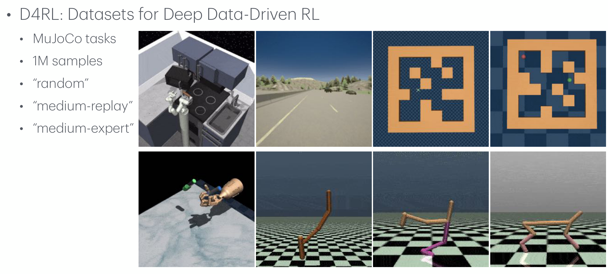
12.2 결과: BC, TD3+BC, CQL
제목 없는 21쪽은 세 방법의 D4RL 성적표입니다. 각 칸의 값은 D4RL의 정규화 점수입니다.
D4RL은 과제마다 반환값의 크기가 다르기 때문에 점수를 무작위 정책이 0, 전문가 정책이 100이 되도록 선형 변환해 보고합니다.
\[ \text{정규화 점수} = 100 \times \frac{\text{반환값} - \text{무작위 정책의 반환값}}{\text{전문가 정책의 반환값} - \text{무작위 정책의 반환값}} \]
그래서 100을 넘는 값(예: walker2d-medium-expert의 107.5)은 전문가 정책보다 높은 반환값을 뜻하고, 여러 데이터셋의 점수를 더한 합계도 의미를 갖습니다.
슬라이드가 주황 테두리로 강조한 두 합계 행을 중심으로 정리하면 다음과 같습니다.
| 행 | BC | TD3+BC | CQL |
|---|---|---|---|
| locomotion-v2 합계 (9개) | 466.7 | 677.4 | 698.5 |
| antmaze-v0 합계 (6개) | 100.2 | 163.8 | 303.6 |
| 총합 | 566.9 | 841.2 | 1002.1 |
| kitchen-v0 합계 | 154.5 | – | 144.6 |
| adroit-v0 합계 | 104.5 | – | 93.6 |
| 총합 + kitchen + adroit | 825.9 | – | 1240.3 |
| 실행 시간 | 10분 | 20분 | 80분 |
표에서 읽어 낼 것은 네 가지입니다.
- locomotion — 나쁜 데이터를 쓰는 능력: 두 강화학습 방법이 BC를 200점 넘게 앞섭니다. 차이가 가장 큰 곳은 학습 도중의 미숙한 데이터가 섞인 medium-replay입니다 — hopper-medium-replay에서 BC 18.1, TD3+BC 60.9, CQL 95.0이고, walker2d-medium-replay에서 BC 26.0, TD3+BC 81.8, CQL 77.2입니다. BC는 섞여 있는 나쁜 행동까지 따라 하지만, 강화학습 방법은 보상으로 그것을 가려냅니다(3.2절).
- antmaze — 이어붙이기: 개미 로봇이 미로를 지나 목표에 도달해야 하는 과제로, 보상이 목표에서만 주어지고 데이터의 궤적이 평가 때의 목표로 곧장 가지 않으므로 여러 궤적 조각을 이어붙여야 합니다(3.1절). BC는 medium·large 미로 네 개에서 모두 0.0이고, TD3+BC도 10.6, 3.0, 0.2, 0.0에 그치는 반면 CQL은 61.2, 53.7, 15.8, 14.9를 얻습니다. 합계로는 CQL이 TD3+BC의 두 배에 가깝습니다. 13절이 TD3+BC를 “자주 너무 보수적”이라고 평하는 근거가 이 행입니다 — 정책을 데이터에 묶어 두면 데이터에 없는 경로를 만들어 내기 어렵습니다.
- kitchen·adroit — BC가 이기는 곳: 이 두 묶음에서는 오히려 BC가 CQL보다 높고, TD3+BC는 결과가 없습니다(“–”).
- 실행 시간: CQL은 BC의 8배, TD3+BC의 4배인 80분이 걸립니다. 11.4절의 로그-합-지수를 연속 행동에서 근사하려면 매 갱신마다 여러 행동 표본의 Q를 추가로 계산해야 한다는 점을 떠올리면 자연스러운 차이입니다.
슬라이드에서 locomotion 합계 행에 두른 주황 테두리가 바로 아래 antmaze-umaze-v0 행을 반쯤 가리고 있습니다. 이 행의 값은 36쪽의 IQL 표(20.4절)에서 읽을 수 있으며(BC 54.6, TD3+BC 78.6, CQL 74.0), antmaze 여섯 행을 더하면 세 열 모두 표의 합계 100.2, 163.8, 303.6과 정확히 일치합니다. 실제로 이 슬라이드의 세 열은 36쪽 표의 같은 이름의 세 열과 모든 값이 같습니다.
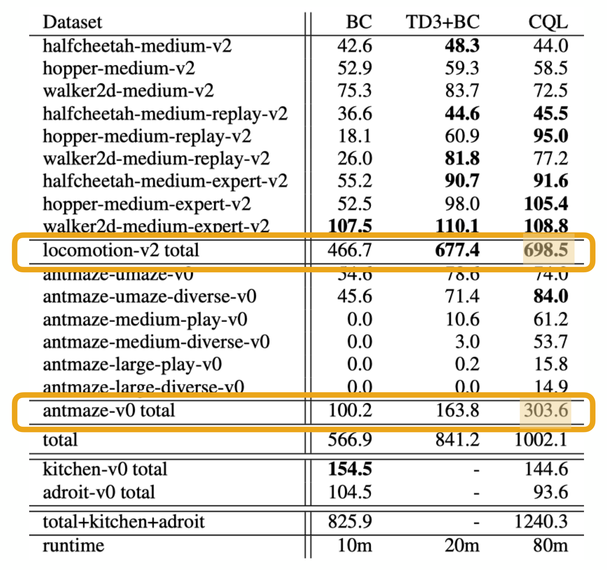
12.3 OGBench
슬라이드의 출처는 Park et al., OGBench: Benchmarking Offline Goal-Conditioned RL, ICLR 2025입니다. 이름의 “OG”는 오프라인 목표 조건부(Offline Goal-conditioned)를 뜻합니다.
- 목표 조건부 강화학습: 정책이 상태뿐 아니라 도달할 목표까지 입력으로 받아 \(\pi(\mathbf{a} \mid \mathbf{s}, \mathbf{g})\)로 행동합니다. 하나의 정책으로 여러 목표를 풀어야 하므로, 데이터의 궤적을 이어붙이는 능력이 더욱 중요해집니다.
- MuJoCo 과제와 100만에서 10억(1M~1B) 개의 표본: D4RL의 100만 개에서 최대 천 배까지 규모를 키웠습니다.
그림의 아홉 열은 환경 이름으로, 미로 탐색(maze, antmaze, humanoidmaze, visual-maze), 공을 다루는 이동(antsoccer), 로봇 팔 조작(cube, scene, puzzle), 그리고 2차원 픽셀 세계(powderworld)입니다. 각 열의 세 줄은 같은 환경의 서로 다른 변형으로, 미로가 커지거나 다루는 물체가 늘어나는 식으로 난도가 달라집니다.
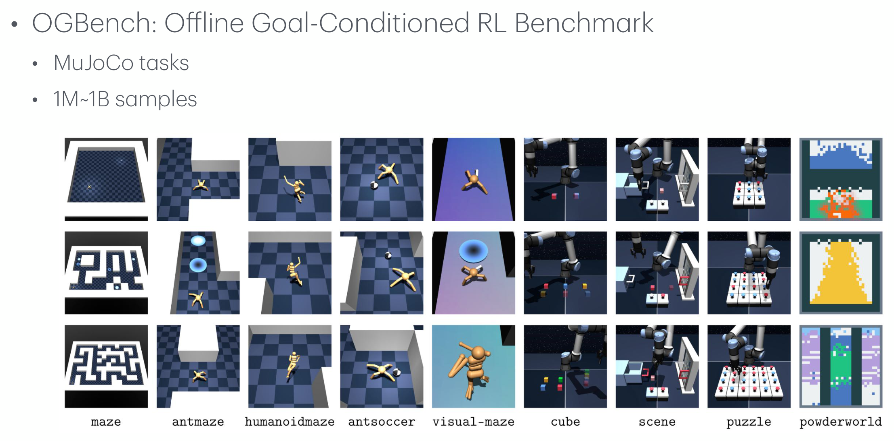
13. TD3+BC와 CQL 요약 (Summary of TD3+BC and CQL)
두 방법은 같은 목표 — 데이터 밖 행동을 피하는 것 — 를 서로 다른 방식으로 이룹니다.
| 방법 | 방식 | 장점 | 단점 |
|---|---|---|---|
| TD3+BC | 데이터에 명시적으로 제약한다 | 직관적이다 | 자주 너무 보수적이다 |
| CQL | Q 값에 벌점을 주어 데이터에 암묵적으로 제약한다 | 단순하고 실제로 잘 작동한다 | \(\alpha\)를 조정해야 한다 |
“명시적”과 “암묵적”의 차이는 무엇이 정책을 붙잡느냐에 있습니다. TD3+BC에서는 BC 항이 정책 출력을 데이터 행동 쪽으로 직접 당기고, CQL에서는 정책은 그저 Q를 최대화할 뿐인데 Q 값의 지형이 데이터 밖을 낮춰 두었기 때문에 정책이 스스로 데이터 쪽에 머뭅니다. 12.2절의 antmaze 결과가 두 방식의 차이를 숫자로 보여 줍니다 — 데이터에 없는 경로를 만들어 내야 하는 과제에서, 정책을 직접 묶는 쪽이 더 크게 손해를 봅니다.
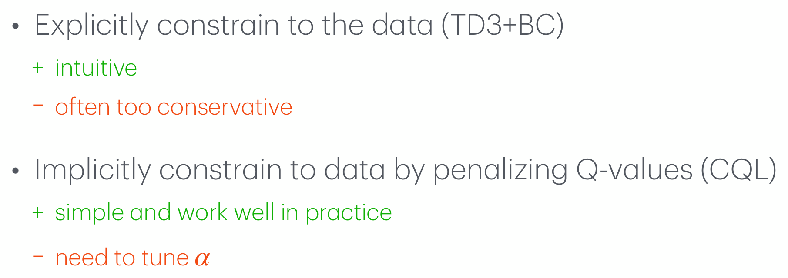
14. Q-함수는 분포 밖 행동에서 믿을 수 없다 (Q-Function Is Unreliable on OOD Actions)
장 구분 슬라이드(24쪽)의 제목은 “Q-함수는 여전히 분포 밖 행동에서 믿을 수 없다”입니다. “여전히”가 중요합니다. TD3+BC와 CQL은 분포 밖 행동의 영향을 줄였을 뿐, 그 행동의 Q를 평가하는 일 자체를 없애지는 못했습니다.
슬라이드의 출처는 8절과 같은 Fujimoto et al. (NeurIPS 2021)입니다. 두 식에서 분포 밖 행동이 끼어드는 곳에 연한 주황 바탕이 칠해져 있습니다.
| 방법 | 칠해진 곳 | 왜 분포 밖인가 |
|---|---|---|
| TD3+BC | \(Q(\mathbf{s}, \pi(\mathbf{s}))\)의 \(\pi(\mathbf{s})\) | 정책의 출력은 BC 항에 끌려가도 데이터의 \(\mathbf{a}\)와 정확히 같지 않다 |
| CQL | \(\mathbb{E}_\pi[Q(\mathbf{s}', \mathbf{a}')]\)의 \(\pi\)와 \(\mathbf{a}'\) | 비평가의 표적값이 정책이 고른 다음 행동에서 Q를 평가한다 |
| CQL | \(\mathbb{E}_{\mathbf{a} \sim \mu(\cdot \mid \mathbf{s})}[Q(\mathbf{s}, \mathbf{a})]\)의 \(\mathbf{a} \sim \mu\)와 \(\mathbf{a}\) | 밀어 내리기 항은 일부러 데이터 밖 행동의 Q를 학습한다 |
결론은 “우리는 여전히 분포 밖 행동의 가치 추정치를 쓰고 있고, 그것은 아마 부정확하다”입니다. CQL의 경우 그 부정확함을 아래쪽으로 기울여 두었을 뿐, 부정확하다는 사실은 그대로입니다.
그래서 슬라이드는 9.2절의 선택지 2를 다시 꺼냅니다 — “분포 밖 행동의 가치를 아예 추정하지 않을 수는 없을까?”
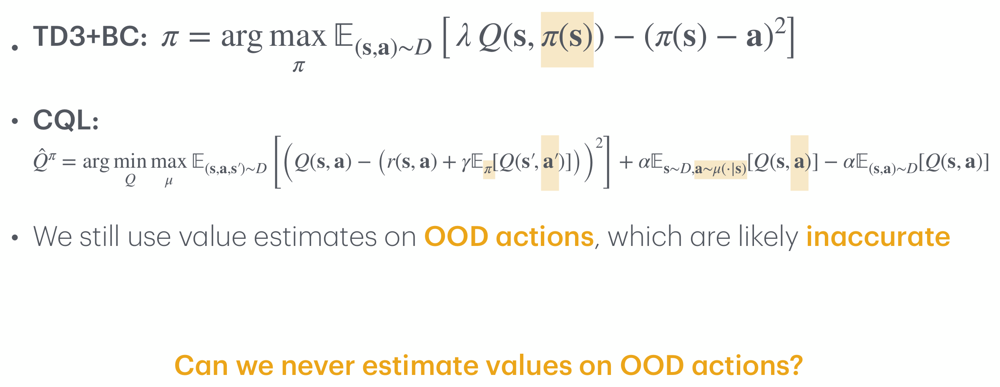
15. 보상을 활용한 행동 복제 (Behavioral Cloning with Rewards)
장 구분 슬라이드(26쪽)의 제목은 “행동 복제에서 보상을 활용하기”입니다. 방향을 뒤집는 것입니다. 지금까지는 오프폴리시 강화학습에서 출발해 분포 밖 행동을 줄이려 했다면, 이번에는 분포 밖 행동을 처음부터 쓰지 않는 BC에서 출발해 보상 정보를 더해 봅니다. BC의 목적함수 \(\log \pi(\mathbf{a} \mid \mathbf{s})\)는 데이터의 행동에서만 평가되므로, Q-함수도 분포 밖 행동도 등장하지 않습니다.
15.1 필터링된 행동 복제 (Filtered BC)
- BC의 문제: 좋은 궤적과 나쁜 궤적을 똑같이 취급한다.
- 해법: 좋은 궤적만 모방한다.
필터링된 행동 복제(Filtered Behavioral Cloning, K% BC)의 세 단계는 다음과 같습니다.
- 궤적을 반환값으로 순위 매긴다: \(r(\tau) = \sum_t r(\mathbf{s}_t, \mathbf{a}_t)\)
- 상위 K%의 데이터만 남긴다: \(\tilde{\mathcal{D}} = \{\tau \mid r(\tau) > \eta\}\). 여기서 \(\eta\)는 상위 K%를 가르는 문턱값, 곧 반환값의 \((100 - K)\) 백분위수입니다.
- 걸러 낸 데이터셋을 모방한다: \(\arg\max_\pi \; \mathbb{E}_{(\mathbf{s}, \mathbf{a}) \sim \tilde{\mathcal{D}}} \big[ \log \pi(\mathbf{a} \mid \mathbf{s}) \big]\)
3단계를 원래 데이터셋 위의 식으로 다시 쓰면 다음 절과의 연결이 분명해집니다. 지시함수 \(\mathbb{1}[\cdot]\)을 써서
\[ \arg\max_\pi \; \mathbb{E}_{(\mathbf{s}, \mathbf{a}) \sim \mathcal{D}} \Big[ \mathbb{1}\big[ r(\tau) > \eta \big] \cdot \log \pi(\mathbf{a} \mid \mathbf{s}) \Big] \]
로 쓸 수 있습니다(\(\tau\)는 \((\mathbf{s}, \mathbf{a})\)가 속한 궤적). 즉 Filtered BC는 가중치가 0 아니면 1인 가중 BC입니다. 상수 배를 제외하면 두 식의 최적해는 같습니다.
\(K\)는 거래를 정합니다. \(K\)가 작을수록 남는 데이터가 좋지만 양이 줄고, 클수록 양은 많지만 나쁜 궤적이 섞입니다. \(K = 100\)이면 원래의 BC입니다. 20.4절의 표에 나오는 “10%BC”가 \(K = 10\)인 Filtered BC이며, locomotion 합계에서 BC의 466.7을 666.2로 끌어올립니다.
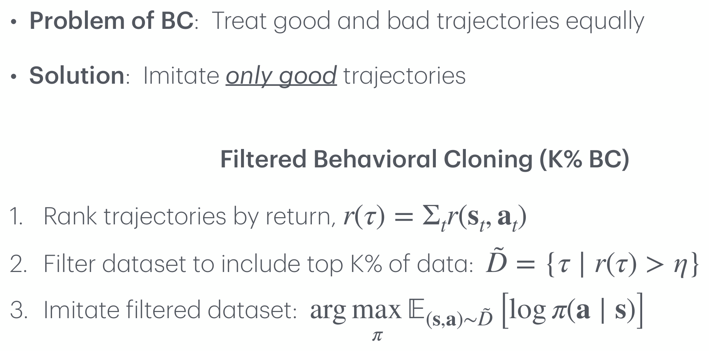
16. 이점을 활용한 행동 복제 (Behavioral Cloning with Advantage)
슬라이드의 출처는 Peng et al., Advantage-Weighted Regression: Simple and Scalable Off-Policy Reinforcement Learning, arXiv 2019입니다.
16.1 Filtered BC의 문제
- 한 궤적 안의 전이를 똑같이 취급한다: 반환값이 높은 궤적에도 나쁜 행동이 섞여 있을 수 있고, 반환값이 낮은 궤적에도 좋은 행동이 있을 수 있습니다. 궤적 단위의 필터는 이를 가리지 못합니다.
- 보상을 이진적으로만 쓴다 (좋다 또는 나쁘다): 15.1절의 가중치는 0 아니면 1이어서, 문턱값을 간신히 넘은 궤적과 압도적으로 좋은 궤적이 같은 대접을 받습니다.
해법은 “각 전이(each transition)에 그 행동이 얼마나 좋은지(how good the action is)에 따라 가중치를 준다”입니다. “얼마나 좋은가”를 재는 도구는 4회차에서 본 이점(advantage)입니다.
\[ A(\mathbf{s}_t, \mathbf{a}_t) = Q(\mathbf{s}_t, \mathbf{a}_t) - V(\mathbf{s}_t) \]
그 상태에서의 평균적인 행동에 비해 이 행동이 얼마나 나은지를 재므로, 같은 궤적 안에서도 전이마다 다른 값을 갖고, 크기까지 연속적으로 반영합니다. 앞의 두 문제를 한꺼번에 해결하는 셈입니다.
16.2 이점 가중 회귀 (Advantage-Weighted Regression, AWR)
AWR은 두 단계입니다.
1단계 — \(\hat{V}^{\pi_\beta}\)를 맞춘다.
\[ \hat{V}^{\pi_\beta} = \arg\min_V \; \mathbb{E}_{(\mathbf{s}_t, \mathbf{a}_t) \sim \mathcal{D}} \Big[ \big( R_t(\tau) - V(\mathbf{s}_t) \big)^2 \Big] \]
\(R_t(\tau)\)는 궤적 \(\tau\)에서 시각 \(t\) 이후에 받은 보상의 합, 곧 4회차의 남은 보상(reward-to-go)입니다(할인을 쓰면 \(R_t(\tau) = \sum_{t' \ge t} \gamma^{t' - t} r_{t'}\)). 데이터의 궤적은 \(\pi_\beta\)가 만든 것이므로, 이 몬테카를로 반환값에 회귀한 \(V\)는 행동 정책의 가치 \(V^{\pi_\beta}\)를 추정합니다. 제곱 오차의 최소화 해는 조건부 평균이기 때문입니다.
2단계 — \(\hat{\pi}\)를 학습한다.
\[ \hat{\pi} = \arg\max_\pi \; \mathbb{E}_{(\mathbf{s}_t, \mathbf{a}_t) \sim \mathcal{D}} \Big[ \log \pi(\mathbf{a}_t \mid \mathbf{s}_t)\, \exp\Big( \beta \big( \underbrace{R_t(\tau) - \hat{V}^{\pi_\beta}(\mathbf{s}_t)}_{\hat{A}(\mathbf{s}_t, \mathbf{a}_t)} \big) \Big) \Big] \]
\(R_t(\tau)\)는 \(Q^{\pi_\beta}(\mathbf{s}_t, \mathbf{a}_t)\)의 한 표본이므로, \(R_t(\tau) - \hat{V}^{\pi_\beta}(\mathbf{s}_t)\)는 이점의 추정치 \(\hat{A}(\mathbf{s}_t, \mathbf{a}_t)\)입니다. 슬라이드도 이 부분에 주황 밑줄을 긋고 “Advantage”라는 이름을 붙였습니다.
이 식은 BC에 전이마다 다른 가중치 \(\exp(\beta \hat{A})\)를 곱한 가중 BC입니다.
- \(\hat{A} > 0\)인 행동(평균보다 좋은 행동)은 가중치가 1보다 커서 더 강하게 모방하고, \(\hat{A} < 0\)인 행동은 1보다 작아서 약하게 모방합니다. 가중치가 0이 되지는 않으므로 15.1절의 “남기거나 버리거나”를 부드럽게 만든 것입니다.
- \(\beta \to 0\)이면 모든 가중치가 1이 되어 BC로 돌아가고, \(\beta\)가 커질수록 각 상태에서 이점이 가장 큰 행동만 사실상 모방하게 됩니다.
- 정책은 여전히 데이터의 행동 \(\mathbf{a}_t\)에서만 로그 가능도를 평가받습니다.
이 데크 후반부에는 기호가 겹칩니다. \(\pi_\beta\)의 \(\beta\)는 “행동(behavior) 정책”이라는 이름표일 뿐이고, \(\exp(\beta \hat{A})\)의 \(\beta\)는 가중치가 얼마나 날카로운지를 정하는 온도 역할의 초모수입니다. 마찬가지로 \(R_t(\tau)\)의 \(\tau\)는 궤적이고, 18–20절의 \(L_2^\tau\)의 \(\tau\)는 기대분위수 회귀의 비대칭 정도를 정하는 0과 1 사이의 수입니다. 21절의 그림에도 데이터 혼합 비율로 \(\tau\)와 \(\beta\)가 다시 나옵니다.
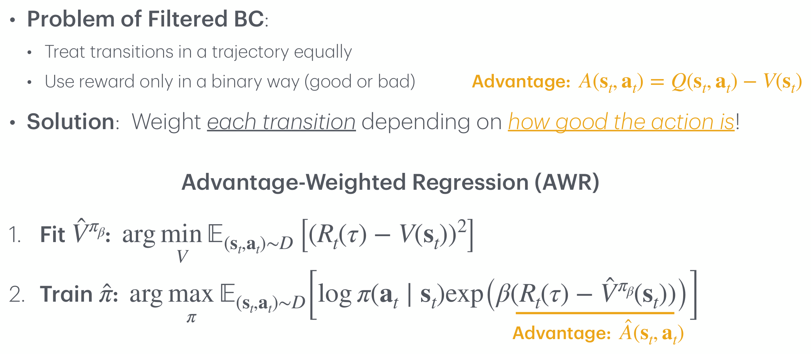
16.3 곁가지: KL 제약 목적함수의 근사
슬라이드의 파란 상자는 “이점 가중 목적함수가 KL 제약 목적함수를 근사함을 보일 수 있다”고 말합니다.
\[ \pi_{\text{new}} = \arg\max_\pi \; \mathbb{E}_{\mathbf{a} \sim \pi(\cdot \mid \mathbf{s})} \big[ Q(\mathbf{s}, \mathbf{a}) \big] \quad \text{s.t.} \quad D_{\mathrm{KL}}(\pi \,\Vert\, \pi_\beta) < \epsilon \]
Q를 최대화하되 행동 정책에서 KL 발산 \(\epsilon\) 이상 멀어지지 말라는 문제입니다. 오프라인 강화학습의 긴장(4절) — 개선하되 데이터에서 너무 멀어지지 말라 — 을 그대로 식으로 쓴 것입니다. 슬라이드는 참고문헌으로 Peters et al.(REPS)과 Rawlik et al.(“psi-learning”)을 듭니다. 이 근사를 단계별로 따라가 보겠습니다(상태 \(\mathbf{s}\) 하나를 고정하고, 행동이 이산이라고 둡니다).
1단계 — 제약을 벌점으로. 부등식 제약을 라그랑주 승수로 목적함수에 넣으면, 적당한 \(\beta > 0\)에 대해
\[ \max_\pi \; \sum_{\mathbf{a}} \pi(\mathbf{a} \mid \mathbf{s}) Q(\mathbf{s}, \mathbf{a}) - \frac{1}{\beta} \sum_{\mathbf{a}} \pi(\mathbf{a} \mid \mathbf{s}) \log \frac{\pi(\mathbf{a} \mid \mathbf{s})}{\pi_\beta(\mathbf{a} \mid \mathbf{s})} \]
를 푸는 것과 같습니다. 승수의 역수가 \(\beta\)이므로, \(\epsilon\)이 클수록(제약이 느슨할수록) \(\beta\)가 커집니다.
2단계 — 11.4절과 같은 정리. \(Z(\mathbf{s}) = \sum_{\mathbf{a}} \pi_\beta(\mathbf{a} \mid \mathbf{s}) \exp(\beta Q(\mathbf{s}, \mathbf{a}))\)로 두고 11.4절과 똑같이 정리하면
\[ \begin{aligned} \sum_{\mathbf{a}} \pi Q - \frac{1}{\beta} \sum_{\mathbf{a}} \pi \log \frac{\pi}{\pi_\beta} &= -\frac{1}{\beta} \sum_{\mathbf{a}} \pi \log \frac{\pi}{\pi_\beta \exp(\beta Q)} \\ &= \frac{1}{\beta} \log Z(\mathbf{s}) - \frac{1}{\beta} D_{\mathrm{KL}}\big( \pi \,\Vert\, \pi^* \big) \end{aligned} \]
이고, 여기서
\[ \pi^*(\mathbf{a} \mid \mathbf{s}) = \frac{1}{Z(\mathbf{s})}\, \pi_\beta(\mathbf{a} \mid \mathbf{s}) \exp\big( \beta Q(\mathbf{s}, \mathbf{a}) \big) \]
입니다. 따라서 최적해는 \(\pi = \pi^*\) — 행동 정책을 \(\exp(\beta Q)\)로 다시 가중한 분포입니다.
3단계 — Q 대신 이점. \(\exp(\beta Q) = \exp(\beta A) \exp(\beta V(\mathbf{s}))\)이고 \(\exp(\beta V(\mathbf{s}))\)는 행동에 의존하지 않으므로 \(Z(\mathbf{s})\)에 흡수됩니다. 즉 \(\pi^* \propto \pi_\beta \exp(\beta A)\)입니다.
4단계 — 매개화된 정책으로 투영. \(\pi^*\)는 식으로만 존재하므로, 신경망 정책 \(\pi_\theta\)를 그것에 맞춥니다.
\[ \begin{aligned} & \arg\min_\theta \; \mathbb{E}_{\mathbf{s}} \Big[ D_{\mathrm{KL}}\big( \pi^*(\cdot \mid \mathbf{s}) \,\Vert\, \pi_\theta(\cdot \mid \mathbf{s}) \big) \Big] \\ ={}& \arg\max_\theta \; \mathbb{E}_{\mathbf{s}}\, \mathbb{E}_{\mathbf{a} \sim \pi^*} \big[ \log \pi_\theta(\mathbf{a} \mid \mathbf{s}) \big] \\ ={}& \arg\max_\theta \; \mathbb{E}_{\mathbf{s}}\, \mathbb{E}_{\mathbf{a} \sim \pi_\beta} \Big[ \frac{\exp(\beta A(\mathbf{s}, \mathbf{a}))}{Z(\mathbf{s})} \log \pi_\theta(\mathbf{a} \mid \mathbf{s}) \Big] \end{aligned} \]
첫 등호는 KL 발산에서 \(\pi_\theta\)와 무관한 \(\pi^*\)의 엔트로피 부분을 버린 것이고, 둘째 등호는 \(\pi^*\)에 대한 기댓값을 \(\pi_\beta\)에 대한 기댓값으로 바꾸며 비율 \(\pi^*/\pi_\beta = \exp(\beta A)/Z\)를 곱한 것입니다.
5단계 — AWR. \(\mathbf{a} \sim \pi_\beta\)의 표본은 바로 데이터셋의 행동입니다. 여기서 정규화 상수 \(1/Z(\mathbf{s})\)를 무시하고, 이점을 \(R_t(\tau) - \hat{V}^{\pi_\beta}(\mathbf{s}_t)\)로 추정하면 16.2절의 AWR 목적함수가 그대로 나옵니다.
슬라이드가 “근사(approximates)”라고 말하는 이유도 여기서 드러납니다. \(Z(\mathbf{s})\)를 버렸고, 이점을 한 번의 몬테카를로 표본으로 추정했으며, 그 이점이 개선된 정책이 아니라 \(\pi_\beta\)의 것이라는 세 가지 근사가 들어 있습니다. 마지막 근사가 16.4절의 첫 번째 단점입니다.
11.4절의 “\(\mathbb{E}_\mu[Q] + \mathcal{H}(\mu) = \log Z - D_{\mathrm{KL}}\)”과 16.3절의 “\(\mathbb{E}_\pi[Q] - \frac{1}{\beta} D_{\mathrm{KL}}(\pi \Vert \pi_\beta) = \frac{1}{\beta}\log Z - \frac{1}{\beta}D_{\mathrm{KL}}\)”은 같은 항등식입니다. 기댓값에 엔트로피(또는 기준 분포로부터의 KL 벌점)를 더해 최대화하면 해는 항상 \(\exp(\text{점수})\)에 비례하는 분포이고 최댓값은 로그 분배함수입니다. CQL은 이 최댓값(\(\log \sum \exp Q\))을 벌점으로 썼고, AWR은 이 최적 분포(\(\pi_\beta e^{\beta A}\))를 모방 대상으로 썼습니다. 7회차 SAC의 최대 엔트로피 정책도 같은 뿌리입니다.
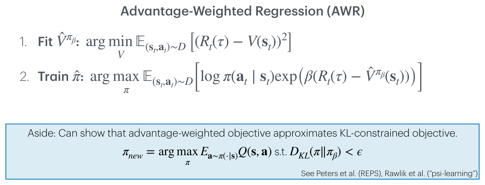
16.4 장점과 단점
| 장점 | 단점 |
|---|---|
| 단순하다 | \(\hat{A}^{\pi_\beta}\)는 \(\hat{A}^{\pi_\theta}\)보다 약한 정책을 가정한다 |
| 분포 밖 행동으로 전혀 학습하지 않는다 | 몬테카를로 추정 \(R_t(\tau)\)는 잡음이 크다 |
- 분포 밖 행동이 없다: \(V\)는 데이터의 상태에서 데이터의 반환값으로 회귀하고, 정책은 데이터의 행동에서만 로그 가능도를 평가받습니다. 14절이 지적한 문제가 원천적으로 사라졌습니다.
- 약한 정책의 이점: \(\hat{A}^{\pi_\beta}(\mathbf{s}_t, \mathbf{a}_t)\)는 “\(\mathbf{a}_t\)를 하고 그 뒤로는 \(\pi_\beta\)를 따를 때, \(\pi_\beta\)의 평균보다 얼마나 나은가”를 잽니다. \(R_t(\tau)\)가 행동 정책이 이어 간 궤적의 반환값이기 때문입니다. 그러나 우리가 만드는 정책은 그 뒤에도 \(\pi_\beta\)보다 잘 행동할 것이므로, 진짜로 알고 싶은 것은 개선된 정책 \(\pi_\theta\) 기준의 이점 \(\hat{A}^{\pi_\theta}\)입니다. \(\pi_\beta\) 기준으로는 “지금 좋은 행동을 해도 이후에 행동 정책이 망치는” 경우를 과소평가하게 되며, 결과적으로 AWR은 \(\pi_\beta\)에서 한 걸음만 개선하는 셈입니다.
- 잡음: \(R_t(\tau)\)는 궤적 하나의 반환값이라 분산이 큽니다. 4회차에서 정책 경사의 분산을 줄이려고 비평가를 도입했던 것과 같은 문제입니다.
슬라이드의 마지막 질문이 다음 부분을 엽니다 — “\(\hat{A}^{\pi_\beta}\)보다 나은 \(\hat{A}^{\pi_\theta}\)를 얻을 수 있을까?” 분포 밖 행동을 쓰지 않는다는 AWR의 장점은 지키면서, 행동 정책이 아니라 개선된 정책의 가치를 추정할 수 있느냐는 물음입니다.
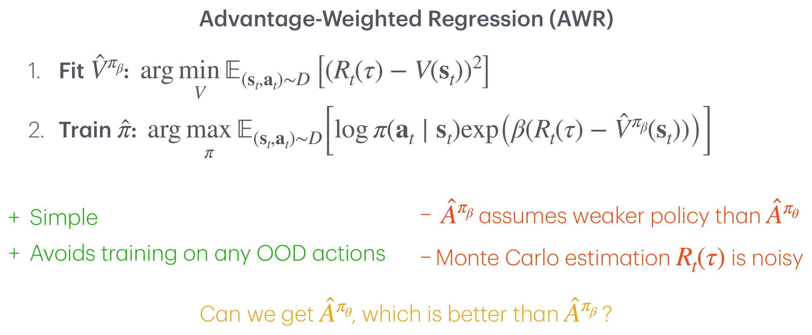
17. 분포 밖 행동을 추정하지 않는 Q-학습 (Q-Learning without Estimating OOD Actions)
여기서부터 20절까지의 출처는 Kostrikov et al., Offline Reinforcement Learning with Implicit Q-Learning, ICLR 2022입니다.
17.1 다음 행동을 데이터에서 가져오기: SARSA
Q-학습의 손실(정책이 다음 행동을 고르는 형태)을 다시 봅니다.
\[ L_Q(\phi) = \mathbb{E}_{(\mathbf{s}, \mathbf{a}, \mathbf{s}') \sim \mathcal{D}} \Big[ \Big( Q_\phi(\mathbf{s}, \mathbf{a}) - \big( r(\mathbf{s}, \mathbf{a}) + \gamma\, \mathbb{E}_{\mathbf{a}' \sim \pi(\cdot \mid \mathbf{s}')} [ Q_{\phi'}(\mathbf{s}', \mathbf{a}') ] \big) \Big)^2 \Big] \]
(\(\phi'\)은 6회차의 표적 신경망입니다.) 슬라이드가 주황 바탕으로 칠한 곳은 \(\mathbf{a}' \sim \pi(\cdot \mid \mathbf{s}')\)와 \(\mathbf{a}'\)입니다.
- 문제: 분포 밖 행동을 평가한다. 정책 \(\pi\)가 고른 \(\mathbf{a}'\)은 데이터에 없을 수 있습니다.
- 해법: 분포 안의 행동 \(\mathbf{a}' \sim \mathcal{D}\)를 쓴다. 표적값의 기댓값을 \(\gamma\, \mathbb{E}_{\mathbf{a}' \sim \mathcal{D}}[Q_{\phi'}(\mathbf{s}', \mathbf{a}')]\)로 바꿉니다.
데이터의 궤적에는 \(\mathbf{s}'\)에서 실제로 한 다음 행동 \(\mathbf{a}'\)이 기록되어 있으므로, 전이를 하나 더 길게 \((\mathbf{s}, \mathbf{a}, r, \mathbf{s}', \mathbf{a}')\)로 뽑으면 됩니다.
\[ L_Q(\phi) = \mathbb{E}_{(\mathbf{s}, \mathbf{a}, r, \mathbf{s}', \mathbf{a}') \sim \mathcal{D}} \Big[ \Big( Q_\phi(\mathbf{s}, \mathbf{a}) - \big( r + \gamma\, Q_{\phi'}(\mathbf{s}', \mathbf{a}') \big) \Big)^2 \Big] \]
뽑는 다섯 개 짝 \((s, a, r, s', a')\)의 머리글자를 딴 이름이 SARSA입니다. 이 손실에서 Q가 평가되는 곳은 \((\mathbf{s}, \mathbf{a})\)와 \((\mathbf{s}', \mathbf{a}')\) 두 곳뿐이고, 둘 다 데이터에 있는 쌍입니다. 슬라이드의 결론 그대로 “SARSA 형태의 목적함수는 분포 밖 행동을 추정하지 않고도 Q 값을 학습할 수 있습니다.”
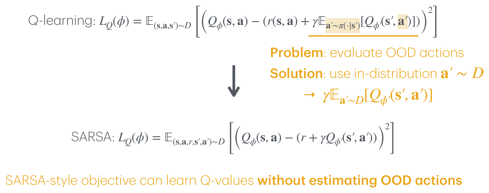
17.2 그러나 SARSA는 행동 정책의 가치를 배운다
슬라이드는 SARSA의 표적값 \(\gamma Q_{\phi'}(\mathbf{s}', \mathbf{a}')\)에 주황 바탕을 칠하고 “이것은 \(\pi_\beta\)의 좋은 행동과 나쁜 행동을 모두 쓴다”고 지적합니다. \(\mathbf{a}' \sim \pi_\beta\)이므로 SARSA의 고정점은 행동 정책의 벨만 기대 방정식
\[ Q^{\pi_\beta}(\mathbf{s}, \mathbf{a}) = r(\mathbf{s}, \mathbf{a}) + \gamma\, \mathbb{E}_{\mathbf{s}'} \mathbb{E}_{\mathbf{a}' \sim \pi_\beta(\cdot \mid \mathbf{s}')} \big[ Q^{\pi_\beta}(\mathbf{s}', \mathbf{a}') \big] \]
의 해, 곧 \(Q^{\pi_\beta}\)입니다. 16.4절에서 AWR의 약점이었던 “행동 정책 기준의 가치”로 되돌아간 것입니다.
그래서 슬라이드는 이렇게 요구합니다 — “\(\pi\)는 \(\pi_\beta\)의 행동 가운데 좋은 행동만 써야 한다.”
\[ L_Q(\phi) = \mathbb{E}_{(\mathbf{s}, \mathbf{a}, r, \mathbf{s}', \mathbf{a}') \sim \mathcal{D}} \Big[ \Big( Q_\phi(\mathbf{s}, \mathbf{a}) - \big( r + \gamma \max_{\mathbf{a}' \in \mathcal{A} \;\text{s.t.}\; \pi_\beta(\mathbf{a}' \mid \mathbf{s}') > 0} Q_{\phi'}(\mathbf{s}', \mathbf{a}') \big) \Big)^2 \Big] \]
하늘색 바탕의 이 \(\max\)는 Q-학습의 \(\max\)와 다릅니다. 최대화의 범위가 행동 정책이 실제로 할 수 있는 행동(\(\pi_\beta(\mathbf{a}' \mid \mathbf{s}') > 0\)), 곧 데이터 지지집합으로 제한되어 있습니다. 그러므로 분포 밖 행동을 평가하지 않으면서도 \(\max\)의 탐욕성은 유지합니다. 이 손실의 고정점은 “데이터가 허락하는 행동만 쓰는 정책 가운데 최선의 정책”의 Q입니다.
슬라이드는 이것을 “\(V^{\pi_\beta}(\mathbf{s}') = \mathbb{E}_{\mathbf{a}' \sim \pi_\beta(\cdot \mid \mathbf{s}')}[Q(\mathbf{s}', \mathbf{a}')]\)의 가장 좋은 표본”이라고 표현합니다. 오른쪽 아래의 히스토그램이 그 뜻입니다. 한 상태에서 행동 정책이 할 법한 행동들 \(\mathbf{a}_1, \mathbf{a}_2, \ldots\)의 Q 값을 모아 히스토그램을 그리면,
- SARSA가 맞추는 \(V^{\pi_\beta}\)는 그 평균 \(\mathbb{E}_{\mathbf{a}}[Q(\mathbf{s}, \mathbf{a})]\)(검은 화살표)이고,
- 우리가 원하는 것은 그 오른쪽 끝 \(\max_{\mathbf{a}} Q(\mathbf{s}, \mathbf{a})\)(하늘색 화살표)입니다.
남은 문제는 이 제한된 \(\max\)를 어떻게 계산하느냐입니다. 연속 행동 공간에서는 지지집합을 알 수 없고, 데이터에는 보통 한 상태에 행동이 하나씩만 기록되어 있어 “그 상태에서 가능한 행동들” 가운데 최댓값을 직접 구할 수 없습니다. 다음 두 절이 이 \(\max\)를 명시적으로 계산하지 않고 얻는 방법입니다.
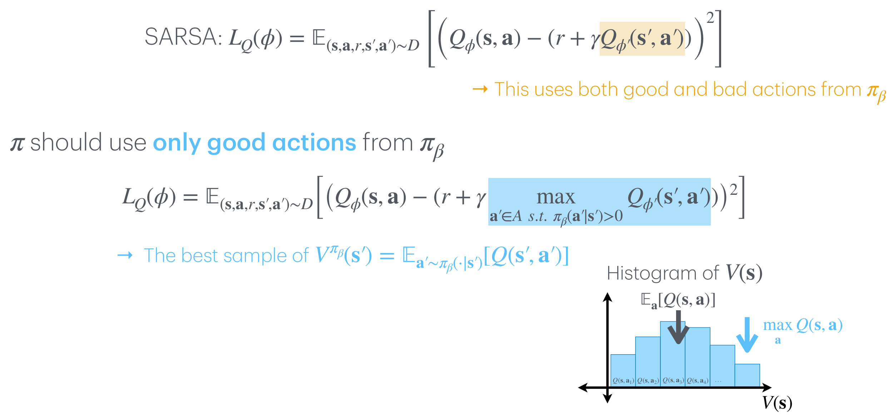
18. 최선의 행동으로 맞춘 가치 함수 (Value Function with Best Actions)
발상은 상태 가치 함수 \(V_\psi(\mathbf{s})\)를 따로 두고, 그것이 평균이 아니라 히스토그램의 오른쪽 끝을 맞추게 하는 것입니다.
18.1 보통의 상태 가치 학습
\(V\)를 Q에 맞추는 보통의 방법은 제곱 오차입니다.
\[ L_V(\psi) = \mathbb{E}_{(\mathbf{s}, \mathbf{a}) \sim \mathcal{D}} \Big[ \big( Q_{\phi'}(\mathbf{s}, \mathbf{a}) - V_\psi(\mathbf{s}) \big)^2 \Big] = \mathbb{E}_{(\mathbf{s}, \mathbf{a}) \sim \mathcal{D}} \Big[ L_2\big( Q_{\phi'}(\mathbf{s}, \mathbf{a}) - V_\psi(\mathbf{s}) \big) \Big] \]
상태 하나를 고정하면 행동만 \(\pi_\beta\)에서 무작위이므로, 이것을 최소화하는 값 \(v = V_\psi(\mathbf{s})\)는
\[ \frac{\partial}{\partial v} \mathbb{E}_{\mathbf{a} \sim \pi_\beta} \big[ (Q(\mathbf{s}, \mathbf{a}) - v)^2 \big] = -2\big( \mathbb{E}_{\mathbf{a} \sim \pi_\beta}[Q(\mathbf{s}, \mathbf{a})] - v \big) = 0 \]
에서 \(v = \mathbb{E}_{\mathbf{a} \sim \pi_\beta}[Q(\mathbf{s}, \mathbf{a})]\), 곧 평균입니다. 히스토그램에서 \(L_2\) 손실의 화살표가 가운데를 가리키는 이유입니다. 이대로는 SARSA와 같은 \(V^{\pi_\beta}\)를 얻습니다.
18.2 기대분위수 회귀로 바꾸기
그래서 손실을 비대칭으로 바꿉니다. 슬라이드의 표현으로 “여기서는 ’기대분위수 회귀(expectile regression)’를 씁니다.”
\[ L_V(\psi) = \mathbb{E}_{(\mathbf{s}, \mathbf{a}) \sim \mathcal{D}} \Big[ L_2^\tau\big( Q_{\phi'}(\mathbf{s}, \mathbf{a}) - V_\psi(\mathbf{s}) \big) \Big] \]
\(L_2^\tau\)의 정확한 모양은 다음 절에서 보고, 여기서는 슬라이드가 주는 직관만 먼저 정리합니다.
| \(\tau\) | \(V_\psi(\mathbf{s})\)가 대략 맞추는 것 |
|---|---|
| 0.9 | \(Q_\phi(\mathbf{s}, \cdot)\)의 상위 10% |
| 0.5 | \(Q_\phi(\mathbf{s}, \cdot)\)의 평균 |
| 0.1 | \(Q_\phi(\mathbf{s}, \cdot)\)의 상위 90% (곧 아래쪽) |
히스토그램 오른쪽의 하늘색 위쪽 화살표 “\(L_2^\tau\) loss, \(\tau \approx 0.9\)”가 \(\max\) 근처를 가리키는 것이 목표입니다. 이 \(V_\psi\)는 데이터의 \((\mathbf{s}, \mathbf{a})\)에서만 \(Q_{\phi'}\)를 평가하므로 분포 밖 행동이 끼어들 틈이 없습니다.
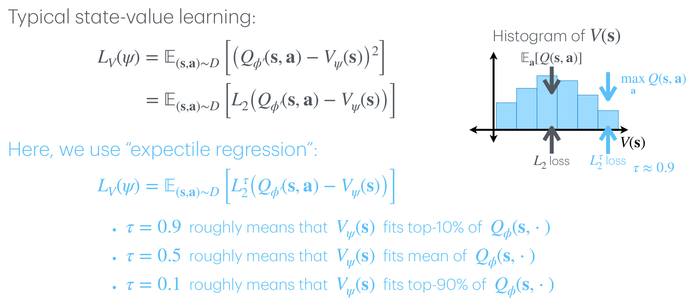
19. 기대분위수 회귀 (Expectile Regression)
19.1 손실의 정의
\(x\)를 표적값 − 예측값(target − prediction)이라 하면, 기대분위수 회귀 손실은
\[ L_2^\tau(x) = \begin{cases} (1 - \tau)\, x^2 & \text{if } x < 0 \\ \tau\, x^2 & \text{otherwise} \end{cases} \]
입니다. 한 줄로 쓰면 \(L_2^\tau(x) = \lvert \tau - \mathbb{1}[x < 0] \rvert\, x^2\)이고, \(\tau = 0.5\)이면 보통의 제곱 손실의 절반입니다. 18절에서는 \(x = Q_{\phi'}(\mathbf{s}, \mathbf{a}) - V_\psi(\mathbf{s})\)입니다.
슬라이드는 \(\tau = 0.9\)의 경우를 풀어 줍니다.
\[ L_2^{0.9}(x) = \begin{cases} 0.1\, x^2 & \text{if } x < 0 \\ 0.9\, x^2 & \text{otherwise} \end{cases} \]
| 경우 | \(x\)의 부호 | 손실 | 결과 |
|---|---|---|---|
| 예측이 표적보다 크다 | \(x < 0\) | 작다 (\(0.1x^2\)) | 예측이 큰 채로 남는다 |
| 예측이 표적보다 작다 | \(x \ge 0\) | 크다 (\(0.9x^2\)) | 예측이 커진다 |
결과적으로 “예측은 높은 표적값 쪽으로 맞춰지는 경향을 갖습니다.” 표적값들이 흩어져 있을 때, 예측보다 위에 있는 표적은 9배 세게 당기고 아래에 있는 표적은 약하게만 당기므로 균형점이 위로 올라갑니다.
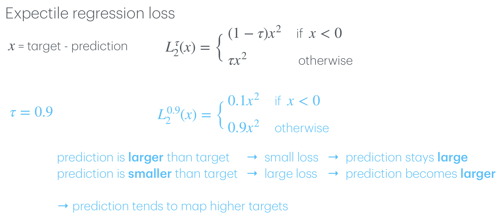
19.2 보충 유도: 기대분위수가 평균에서 최댓값까지 움직이는 이유
확률변수 \(X\)(18절에서는 \(\mathbf{a} \sim \pi_\beta\)일 때의 \(Q(\mathbf{s}, \mathbf{a})\))의 \(\tau\)-기대분위수 \(m_\tau\)는 \(\mathbb{E}[L_2^\tau(X - m)]\)을 최소화하는 \(m\)입니다. \(X - m < 0\)인 부분과 아닌 부분으로 나눠 \(m\)으로 미분하면
\[ \begin{aligned} \frac{d}{dm} \mathbb{E}\big[ L_2^\tau(X - m) \big] &= -2\Big( \tau\, \mathbb{E}\big[ (X - m)\, \mathbb{1}[X \ge m] \big] \\ &\qquad\quad + (1 - \tau)\, \mathbb{E}\big[ (X - m)\, \mathbb{1}[X < m] \big] \Big) = 0 \end{aligned} \]
이고, \((u)_+ = \max(u, 0)\)로 정리하면 최적 조건은
\[ \tau\, \mathbb{E}\big[ (X - m_\tau)_+ \big] = (1 - \tau)\, \mathbb{E}\big[ (m_\tau - X)_+ \big] \]
입니다. \(m_\tau\) 위쪽으로 튀어나온 양의 \(\tau\)배와 아래쪽으로 들어간 양의 \((1-\tau)\)배가 균형을 이루는 지점입니다. 이 조건에서 세 가지가 나옵니다.
- \(\tau = 0.5\): 양쪽 계수가 같으므로 \(\mathbb{E}[(X - m)_+] = \mathbb{E}[(m - X)_+]\), 곧 \(\mathbb{E}[X - m] = 0\)이고 \(m_{0.5} = \mathbb{E}[X]\) — 평균입니다.
- \(\tau\)가 커지면: 위쪽의 무게가 커지므로 균형을 맞추려면 \(m_\tau\)가 올라가야 합니다. \(m_\tau\)는 \(\tau\)에 대해 증가합니다.
- \(\tau \to 1\): 조건이 \(\mathbb{E}[(X - m_\tau)_+] = \frac{1 - \tau}{\tau}\mathbb{E}[(m_\tau - X)_+] \to 0\)이 되어야 하므로, \(m_\tau\) 위로 튀어나온 값이 사라질 때까지 올라갑니다 — 곧 \(X\)가 가질 수 있는 최댓값에 수렴합니다.
18절에 대입하면, \(\tau \to 1\)일 때 \(V_\psi(\mathbf{s}) \to \max_{\mathbf{a}:\, \pi_\beta(\mathbf{a} \mid \mathbf{s}) > 0} Q(\mathbf{s}, \mathbf{a})\)입니다. 17.2절의 제한된 \(\max\)가 정확히 이 극한입니다. 최댓값을 직접 계산하지 않고, 데이터의 \((\mathbf{s}, \mathbf{a})\) 쌍으로 비대칭 회귀를 하기만 하면 그 값에 다가갑니다.
슬라이드의 “\(\tau = 0.9\)는 대략 상위 10%를 맞춘다”는 직관을 위한 표현이지 정확한 등식이 아닙니다. 예를 들어 \(X\)가 \(\{1, 2, \ldots, 10\}\)에서 고르게 뽑힌다면, 위 최적 조건을 수치로 풀어 얻은 기대분위수는 다음과 같습니다(본 포스트에서 직접 계산한 예시).
| \(\tau\) | 0.1 | 0.5 | 0.9 | 0.99 | 0.999 |
|---|---|---|---|---|---|
| \(m_\tau\) | 3.03 | 5.50 | 7.97 | 9.58 | 9.96 |
0.9 분위수(상위 10%의 경계)는 9 근처지만 0.9-기대분위수는 7.97입니다. 분위수는 값의 순서만 보지만 기대분위수는 제곱 손실이라 값의 크기까지 반영하므로, 둘은 일반적으로 다른 값입니다. 기대분위수가 확실히 보장하는 것은 평균(\(\tau = 0.5\))에서 최댓값(\(\tau \to 1\))까지 \(\tau\)를 따라 매끄럽게 이동한다는 성질이며, IQL에 필요한 것도 이것입니다. 다만 이 예에서 보듯 최댓값에 충분히 가까워지려면 \(\tau\)를 상당히 1에 가깝게 잡아야 하고, 너무 가까우면 \(Q\)의 추정 오차 가운데 위로 튄 것을 다시 고를 위험이 커집니다. 20절의 단점 “\(\tau\) 조정이 결정적이다”가 여기서 나옵니다.
분위수 회귀(quantile regression)는 같은 비대칭 가중치 \(\lvert \tau - \mathbb{1}[x < 0] \rvert\)를 절댓값 \(\lvert x \rvert\)에 곱하고, 그 해는 \(\tau\)-분위수입니다. 기대분위수 회귀는 이를 제곱 \(x^2\)에 곱한 것이며, 제곱 손실의 해가 평균(expectation)이듯 그 해가 “기대값의 분위수 판”이라는 뜻에서 기대분위수(expectile)라 부릅니다. 제곱 손실이라 경사가 매끄럽고 신경망 학습에 그대로 쓰기 좋다는 실용적 장점이 있습니다.
20. 암묵적 Q-학습 (Implicit Q-Learning, IQL)
20.1 알고리즘
17–19절의 조각을 합친 것이 암묵적 Q-학습(Implicit Q-Learning, IQL)입니다. 비평가 학습은 두 단계의 반복입니다.
- \(V_\psi(\mathbf{s})\)를 \(\mathcal{D}\)에서 기대분위수 손실로 맞춘다. \[ \arg\min_\psi \; \mathbb{E}_{(\mathbf{s}, \mathbf{a}) \sim \mathcal{D}} \Big[ L_2^\tau\big( Q_{\phi'}(\mathbf{s}, \mathbf{a}) - V_\psi(\mathbf{s}) \big) \Big] \]
- \(Q_\phi(\mathbf{s}, \mathbf{a})\)를 \(\mathcal{D}\)에서 맞춘다. \[ \arg\min_\phi \; \mathbb{E}_{(\mathbf{s}, \mathbf{a}, r, \mathbf{s}') \sim \mathcal{D}} \Big[ \big( (r + V_\psi(\mathbf{s}')) - Q_\phi(\mathbf{s}, \mathbf{a}) \big)^2 \Big] \]
- 1로 돌아간다.
슬라이드는 2단계의 표적값을 \(r + V_\psi(\mathbf{s}')\)로 적어 할인율을 생략했으며, 원 논문의 표적값은 \(r + \gamma V_\psi(\mathbf{s}')\)입니다.
수렴하면 정책을 AWR로 추출합니다(extract \(\pi\) using AWR).
\[ \arg\max_\theta \; \mathbb{E}_{(\mathbf{s}_t, \mathbf{a}_t) \sim \mathcal{D}} \Big[ \log \pi_\theta(\mathbf{a}_t \mid \mathbf{s}_t)\, \exp\Big( \beta \big( Q_\phi^{\pi_\theta}(\mathbf{s}_t, \mathbf{a}_t) - V_\psi^{\pi_\theta}(\mathbf{s}_t) \big) \Big) \Big] \]
(슬라이드의 \(Q_\phi^{\pi_\theta}(\mathbf{s}_t, \mathbf{a})\)는 문맥상 \(\mathbf{a}_t\)입니다.)
20.2 무엇이 “암묵적”인가
두 단계를 합쳐 읽으면 IQL이 실제로 무엇을 하는지 드러납니다.
- 1단계의 \(V_\psi(\mathbf{s}')\)는 19.2절에 의해 \(\tau \to 1\)에서 \(\max_{\mathbf{a}':\, \pi_\beta(\mathbf{a}' \mid \mathbf{s}') > 0} Q(\mathbf{s}', \mathbf{a}')\)에 다가갑니다.
- 그러면 2단계의 표적값 \(r + \gamma V_\psi(\mathbf{s}')\)는 17.2절의 지지집합 안의 \(\max\)를 쓴 Q-학습 표적값 \(r + \gamma \max_{\mathbf{a}' \in \text{supp}} Q(\mathbf{s}', \mathbf{a}')\)이 됩니다.
즉 IQL은 Q-학습을 하는데, 그 \(\max\)를 한 번도 명시적으로 계산하지 않습니다. \(\max\)는 기대분위수 회귀 안에 암묵적으로 들어 있습니다. 그리고 그 과정에서 Q와 V가 평가되는 곳은 모두 데이터의 \((\mathbf{s}, \mathbf{a})\)와 \(\mathbf{s}'\)뿐이어서, 다음 행동 \(\mathbf{a}'\)조차 필요 없습니다(17.1절의 SARSA는 \(\mathbf{a}'\)이 필요했습니다).
\(\tau\)는 두 극단을 잇는 손잡이이기도 합니다.
| \(\tau\) | \(V_\psi(\mathbf{s}')\) | 비평가가 배우는 것 | 정책 추출의 성격 |
|---|---|---|---|
| 0.5 | \(\mathbb{E}_{\mathbf{a}' \sim \pi_\beta}[Q(\mathbf{s}', \mathbf{a}')]\) | \(Q^{\pi_\beta}\) (SARSA와 같음) | \(\pi_\beta\) 기준 이점으로 가중 — 16절의 AWR과 같은 한 걸음 개선 |
| \(\to 1\) | \(\max_{\mathbf{a}' \in \text{supp}} Q(\mathbf{s}', \mathbf{a}')\) | 지지집합 안의 최적 Q | 개선된 정책 기준 이점으로 가중 |
이것이 16.4절의 질문 “\(\hat{A}^{\pi_\beta}\)보다 나은 \(\hat{A}^{\pi_\theta}\)를 얻을 수 있을까?”에 대한 답입니다. 정책 추출 식의 위첨자가 \(\pi_\beta\)가 아니라 \(\pi_\theta\)로 바뀐 이유가 이것으로, 비평가가 행동 정책이 아니라 개선된 정책의 가치를 담고 있으므로 이점도 그 기준으로 계산됩니다. 게다가 이점을 몬테카를로 반환값 \(R_t(\tau)\)가 아니라 학습된 \(Q_\phi - V_\psi\)로 계산하므로, AWR의 두 번째 단점(잡음)도 함께 줄어듭니다.
\(V_\psi\) 없이 \(Q_\phi(\mathbf{s}, \mathbf{a})\)를 \(r + \gamma Q_{\phi'}(\mathbf{s}', \mathbf{a}')\)에 기대분위수 손실로 바로 맞출 수도 있을 것 같습니다. 그러나 이 표적값은 다음 행동 \(\mathbf{a}'\)뿐 아니라 다음 상태 \(\mathbf{s}'\)에 따라서도 흔들립니다. 거기에 높은 쪽으로 맞추는 손실을 쓰면, “좋은 행동을 고르는 것”뿐 아니라 “환경이 운 좋게 좋은 다음 상태를 주는 것”까지 기대하는 낙관이 들어갑니다. IQL은 두 단계로 나눠 이를 피합니다. 1단계에서는 상태 \(\mathbf{s}\)를 고정한 채 행동에 대해서만 높은 쪽을 맞추고, 2단계에서는 다음 상태에 대해 보통의 제곱 손실(평균)을 씁니다. 낙관은 우리가 고를 수 있는 것(행동)에만, 평균은 고를 수 없는 것(환경)에만 적용됩니다.
20.3 장점과 단점
| 장점 | 단점 |
|---|---|
| 분포 밖 행동으로 전혀 학습하지 않는다! | \(\tau\)와 \(\beta\)의 조정이 결정적이다 |
| 정책은 (여전히) 데이터의 행동으로만 학습된다 | |
| 행위자와 비평가의 학습이 분리되어 계산이 빠르다 | |
| 실제로 매우 잘 작동한다 |
- 분리된 학습: 비평가의 두 단계에는 정책이 전혀 등장하지 않습니다. 7회차의 행위자–비평가에서는 비평가의 표적값이 정책의 행동을 필요로 해서 둘을 번갈아 갱신해야 했지만, IQL에서는 비평가를 먼저 수렴시키고 정책은 마지막에 한 번 추출하면 됩니다. CQL처럼 로그-합-지수를 위해 행동을 여러 개 뽑을 필요도 없습니다.
- \(\tau\)와 \(\beta\): \(\tau\)는 19.2절의 경고대로 “얼마나 최댓값에 가까이 갈 것인가”, \(\beta\)는 16.2절대로 “이점을 얼마나 날카롭게 반영할 것인가”를 정합니다.
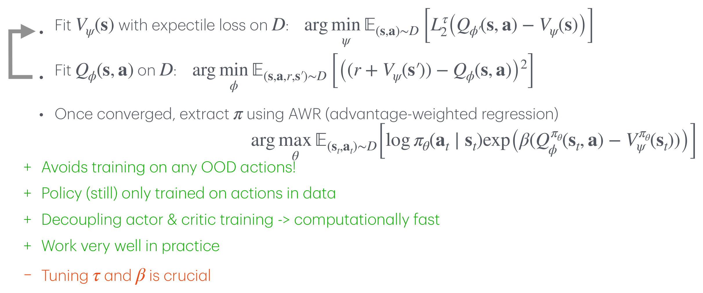
20.4 결과
제목 없는 36쪽은 IQL 논문의 D4RL 결과표입니다(맨 오른쪽 열 이름이 “IQL (Ours)”). 12.2절의 세 방법에 더해, 이 강의에서 다루지 않은 DT(Decision Transformer), AWAC, Onestep RL과 15절의 10%BC가 함께 비교됩니다. 합계 행을 정리하면 다음과 같습니다.
| 행 | BC | 10%BC | DT | AWAC | Onestep RL | TD3+BC | CQL | IQL |
|---|---|---|---|---|---|---|---|---|
| locomotion-v2 | 466.7 | 666.2 | 672.6 | 450.7 | 684.6 | 677.4 | 698.5 | 692.4 |
| antmaze-v0 | 100.2 | 134.2 | 112.2 | 107.7 | 125.3 | 163.8 | 303.6 | 378.0 |
| 총합 | 566.9 | 800.4 | 784.8 | 558.4 | 809.9 | 841.2 | 1002.1 | 1070.4 |
| kitchen-v0 | 154.5 | – | – | – | – | – | 144.6 | 159.8 |
| adroit-v0 | 104.5 | – | – | – | – | – | 93.6 | 118.1 |
| 총합 + kitchen + adroit | 825.9 | – | – | – | – | – | 1240.3 | 1348.3 |
| 실행 시간 | 10분 | 10분 | 960분 | 20분 | ≈20분* | 20분 | 80분 | 20분 |
- antmaze에서의 격차: IQL은 378.0으로 CQL보다 74.4점 높습니다. 특히 medium·large 미로 네 개(71.2, 70.0, 39.6, 47.5)에서 모두 CQL(61.2, 53.7, 15.8, 14.9)을 앞섭니다. 지지집합 안의 \(\max\)로 가치를 전파하는 IQL의 비평가는 이어붙이기가 필요한 과제에서 강합니다.
- locomotion: CQL(698.5)과 IQL(692.4)이 거의 같고, Onestep RL(684.6), TD3+BC(677.4), DT(672.6), 10%BC(666.2)가 뒤를 잇습니다. 10%BC가 BC를 200점 가까이 앞서면서 강화학습 방법들에 근접한다는 점도 눈에 띕니다 — 이 묶음에서는 좋은 데이터를 고르는 것만으로도 상당 부분을 얻습니다. 다만 antmaze에서는 10%BC가 134.2에 그쳐, 걸러 내기만으로는 이어붙이기를 대신하지 못합니다.
- kitchen·adroit: 12.2절에서 BC가 CQL을 이겼던 두 묶음에서 IQL은 BC까지 넘어섭니다.
- 실행 시간: IQL은 20분으로 CQL의 4분의 1입니다. 20.3절의 “행위자와 비평가의 분리 → 빠르다”가 숫자로 드러납니다.
주황 테두리는 두 합계 행을, 연한 주황 바탕은 그 행에서 BC, 10%BC, TD3+BC, CQL, IQL의 다섯 칸을 강조합니다. 이 다섯이 바로 이번 강의에서 다룬 방법들입니다.
antmaze의 여섯 행과 총합, kitchen·adroit를 더한 최종 합계는 모든 열에서 행의 합과 정확히 일치합니다. 유일한 예외는 IQL 열의 locomotion으로, 아홉 개 값을 직접 더하면 692.6이지만 표에는 692.4로 적혀 있고, 총합 1070.4는 692.4를 기준으로 계산되어 있습니다. 결론을 바꾸는 차이는 아니지만 표를 인용할 때 참고할 만합니다. 또한 locomotion 행의 데이터셋 이름은 슬라이드 위에 얹힌 walker 그림에 가려 있으나, BC·TD3+BC·CQL 열의 값이 12.2절의 표와 같으므로 행 순서도 같습니다.
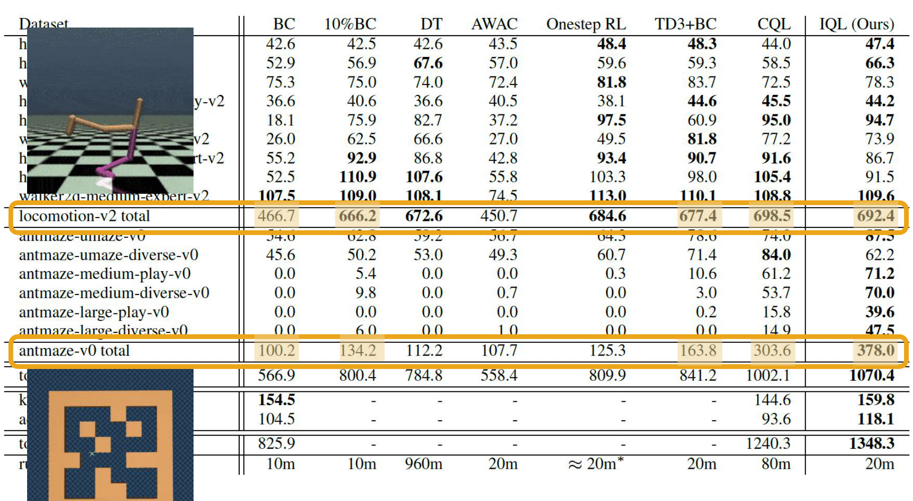
21. 로봇을 위한 사전학습 (Pre-Training for Robots)
장 구분 슬라이드(37쪽)의 질문은 “오프라인 강화학습을 어디에 쓰는가?”입니다. 이어지는 네 장(38–41쪽)은 설명 문장 없이 그림만으로 이루어져 있으므로, 이하의 해설은 그림에 적힌 내용을 읽은 것입니다.
첫 번째 그림은 로봇 조작 정책을 세 단계로 학습하는 과정입니다.
- 브리지 데이터로 사전학습 (Offline RL Pretraining on Bridge Dataset): 10개 도메인, 100개 과제, 1만 2천 개 시연으로 이루어진 브리지 데이터셋에서 오프라인 강화학습으로 정책을 학습합니다. 왼쪽 사진들은 “Put Sushi in Pot”, “Put Eggplant on Plate” 같은 과제이며, 과제마다 파란 점들 가운데 하나만 빨간 과제 ID가 붙어 있어 하나의 정책이 여러 과제를 구분해 수행합니다.
- 브리지 데이터와 목표 데이터를 섞어 미세조정 (Offline RL Fine-tuning on Target Data + Bridge Data): 새 과제 “put corn in bowl”의 소량 데이터(목표 데이터셋)를 브리지 데이터와 한 배치 안에 섞어 다시 오프라인 강화학습을 합니다. 배치의 비율은 그림에서 \(\lfloor \tau \rfloor\)와 \(1 - \lfloor \tau \rfloor\)로 표시됩니다.
- 온라인 데이터와 오프라인 데이터를 섞어 미세조정 (Online RL Fine-tuning): 로봇이 실제로 실행한 롤아웃(rollouts)을 온라인 데이터로 모으고, 이를 오프라인 데이터와 \(\beta : 1 - \beta\)의 비율로 섞어 학습합니다.
5절의 동기가 그대로 구현된 사례입니다 — 다른 프로젝트·다른 기관이 모은 데이터(브리지 데이터)를 다시 모으지 않고 재사용하고, 비싼 실세계 상호작용은 마지막 단계에서만 조금 씁니다. 그림의 \(\tau\)와 \(\beta\)는 데이터 혼합 비율로, 앞 절들의 기대분위수 \(\tau\)나 온도 \(\beta\)와는 무관합니다.
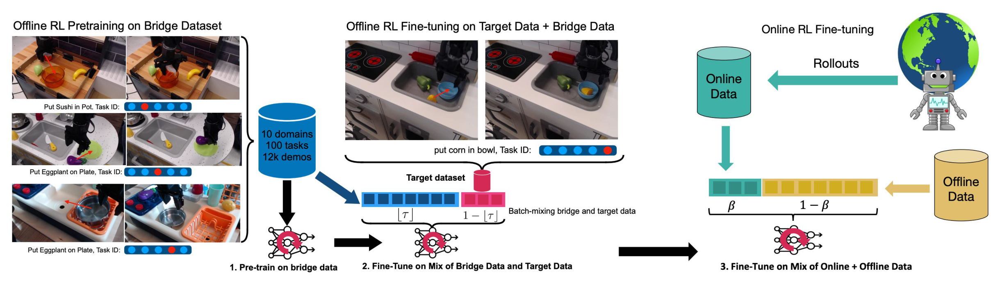
22. 핵융합 (Nuclear Fusion)
두 번째 그림은 토카막(tokamak) 핵융합 장치의 플라스마를 신경망 정책으로 제어하는 시스템입니다. 여덟 개의 패널로 이루어져 있습니다.
- a. 학습 고리 (Learning loop): 학습자(Learner)가 제어 정책의 파라미터를 행위자(Actor)들에게 보내고, 행위자는 환경과 제어 정책 사이에서 측정값 \(m\)과 전압 명령 \(a\)를 주고받으며 목표 \(t\)를 따라 움직입니다. 이 경험 \(\{a, m, t, r\}\)이 재생 버퍼(Replay buffer)에 쌓여 다시 학습자로 갑니다.
- b. 시뮬레이션 환경 (Simulated environment): 센서 모형, 물리 파라미터, 전원 공급 장치, 그리고 플라스마 평형을 계산하는 Grad–Shafranov 풀이기(FGE)로 이루어지며, 종료 조건과 보상을 계산합니다.
- c. 제어 정책 (Control policy): 입력은 측정값 92개와 목표 최대 132개, 신경망은 \(3 \times 256\) 크기의 다층 퍼셉트론, 출력은 행동 19개입니다.
- d–f. 배치 (Deployment): 학습된 제어 정책 하나(e, “Our architecture”)가, 관측기와 여러 개의 제어기(플라스마 모양, R, Z, Ip, 코일 전류 제어)를 엮은 기존 제어 구조(f, “Conventional control”)를 대신해 실시간 제어 시스템에 들어갑니다.
- g–h. 장치 (TCV)와 용기 단면: 16개의 폴로이달 자기장 코일, 옴 코일, 빠른 코일로 둘러싸인 장치와, 그 안의 플라스마 경계·X점·자속선 등을 보여 줍니다.
그림 a–b가 보여 주듯, 이 시스템의 정책은 시뮬레이션 환경과 상호작용하며 재생 버퍼로 학습합니다. 즉 이 그림 자체는 이번 강의의 오프라인 알고리즘을 쓴 사례라기보다, 5절의 첫 번째 동기 — 실제 시스템에서 시행착오를 하는 것이 위험하거나 비싼 분야 — 의 대표적인 예로 읽는 것이 정확합니다. 실제 장치(g)에 들어가는 것은 이미 학습이 끝난 정책입니다. 이어지는 냉각 시스템(23절)과 칩 설계(24절)의 그림도 같은 방식으로 읽을 수 있으며, 슬라이드는 각 사례가 오프라인 데이터를 어떻게 쓰는지 따로 설명하지 않습니다.
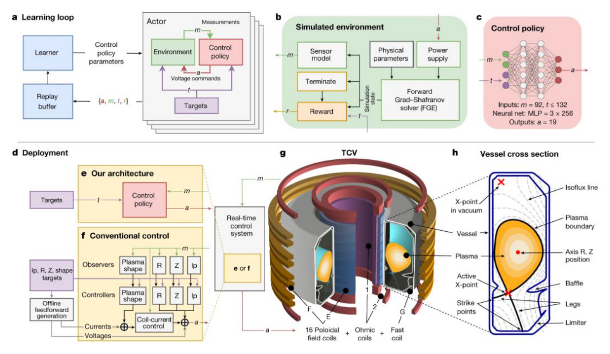
23. 냉각 시스템 (Cooling System)
세 번째 그림은 건물 냉각 시스템의 제어입니다. 네 단계로 이루어진 고리입니다.
- EnergyPlus: 실제 건물 시스템(Real building system)을 건물 에너지 시뮬레이션 도구로 모형화합니다.
- 보정 (Calibration): 그 모형이 실제 건물의 동작과 맞도록 보정합니다.
- 학습 (Training): 보정된 건물 에너지 모형(Building energy model) 위에서 심층 강화학습 에이전트(DRL Agent)를 학습합니다.
- 배치 (Deployment): 학습된 에이전트를 실제 건물로 되돌려 보냅니다.
1–2단계가 실제 건물의 데이터로 모형을 만드는 단계이므로, 실제 건물에서는 데이터를 모으기만 하고 시행착오는 모형 안에서 하는 구조입니다. 실제 건물에서 미숙한 정책으로 냉방을 껐다 켰다 해 볼 수는 없기 때문입니다.
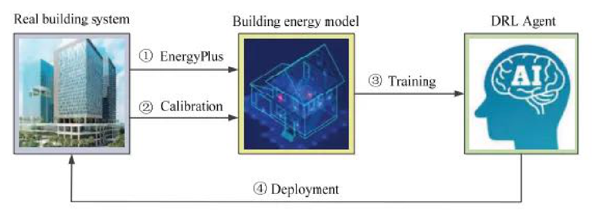
24. 칩 설계 (Chip Design)
네 번째 그림은 PrefixRL이라는 이름의 칩 설계 시스템으로, 회로의 구조를 그래프로 표현하고 그것을 고쳐 나가는 일을 강화학습 문제로 만든 것입니다.
- 상태 \(\mathbf{s}_t\): 회색 노드와 선으로 이루어진 프리픽스 그래프(prefix graph)입니다. 아래쪽 그림처럼 같은 그래프를 \((i, j)\) 칸으로 이루어진 아래 삼각형 격자로도 표현합니다.
- 에이전트 (PrefixRL Agent): Q-신경망(Q-network)이 격자를 입력받아 칸마다 Q 값을 출력합니다. 6회차의 DQN처럼 이산 행동 각각의 Q를 한 번에 내는 구조입니다.
- 행동 \(\mathbf{a}_t\): Q 값이 가장 높은 칸에 노드를 추가합니다. 그림의 예는 add (3,2)이며, 격자에서 (3,2) 칸이 초록으로 칠해져 있습니다.
- 환경 (PrefixRL Environment): 바뀐 그래프를 회로 합성(Circuit Synthesis) 도구에 넣어 실제 회로의 (면적, 지연)을 얻습니다.
- 보상 \(r_t\): \(-\Delta(\text{area})\)와 \(-\Delta(\text{delay})\), 곧 면적과 지연이 줄어든 만큼입니다.
매 스텝마다 회로 합성 도구를 돌려야 하므로 상호작용 한 번의 비용이 큰 분야이며, 5절이 말한 “온라인 데이터 수집이 비싼” 경우에 해당합니다.
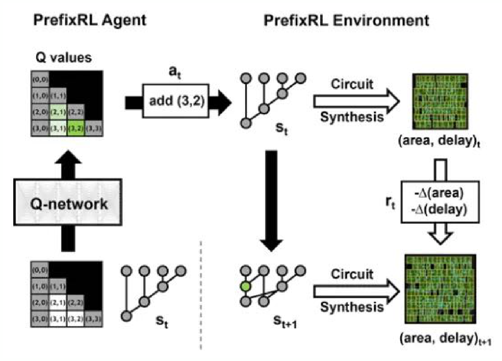
25. 요약 (Summary)
마지막 슬라이드는 오프라인 강화학습을 한 문장으로 정의합니다 — “행동 정책을 넘어서도록 정책을 개선하는 것(improving the policy beyond the behavior policy).”
- 정책을 개선하려면 데이터셋에서 본 적 없는 행동의 가치를 추정해야 합니다.
- 그래서 정책 개선과 분포 이동(분포 밖 행동에서의 부정확한 가치 추정) 사이에 긴장이 생깁니다.
다섯 가지 해법을 슬라이드의 한 줄 요약과 함께, 분포 밖 행동을 어디서 다루는지 기준으로 정리하면 다음과 같습니다.
| 방법 | 슬라이드의 한 줄 요약 | 학습하는 가치 | 분포 밖 행동을 평가하는 곳 |
|---|---|---|---|
| TD3+BC | 정책이 행동 정책에서 벗어나는 정도를 제한한다 | \(Q^\pi\) (TD3의 비평가) | 정책 갱신의 \(Q(\mathbf{s}, \pi(\mathbf{s}))\), 표적값의 다음 행동 |
| CQL | 가치 함수를 정규화해 분포 밖 행동에 낮은 값을 준다 | 보수적인 \(\hat{Q}^\pi\) | 표적값의 \(\mathbb{E}_\pi\), 밀어 내리기 항의 \(\mu\) |
| Filtered BC | 좋은 궤적만 모방한다 | 없음 | 없음 |
| AWR | 행동이 얼마나 좋은지에 따라 좋은 전이만 모방한다 | \(V^{\pi_\beta}\) (몬테카를로) | 없음 |
| IQL | 분포 밖 행동의 가치를 결코 추정하지 않는다 | 지지집합 안의 최적 Q (기대분위수) | 없음 |
표의 위에서 아래로 갈수록 분포 밖 행동과의 접촉이 줄어드는데, 그 대가로 개선의 폭이 줄어들지 않도록 만든 것이 IQL의 기대분위수입니다. Filtered BC와 AWR이 분포 밖 행동을 피하는 대신 행동 정책 근처에 머물렀다면, IQL은 같은 안전함을 유지하면서 데이터가 허락하는 범위 안의 최선까지 가치를 끌어올립니다.
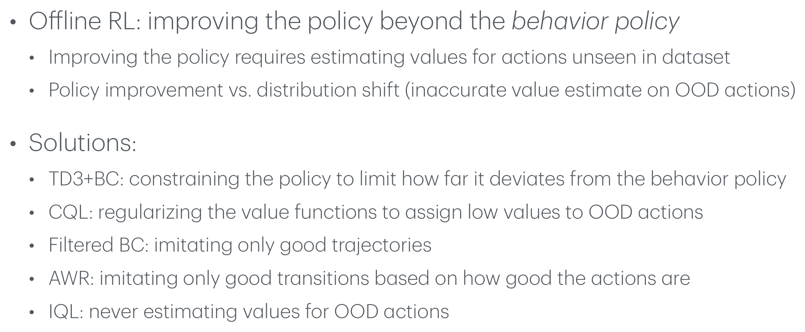
정리하며 (Closing Remarks)
이번 강의의 논리 사슬을 한 장으로 요약하면 다음과 같습니다.
| 단계 | 내용 | 근거 |
|---|---|---|
| ① 문제 설정 | 행동 정책 \(\pi_\beta\)가 모은 고정 데이터 \(\mathcal{D}\)만으로, 목적함수는 그대로 둔 채 \(\pi_\beta\)보다 나은 \(\pi_\theta\)를 학습한다 | 2절 |
| ② BC와의 차이 | 보상과 벨만 갱신 덕분에 궤적을 이어붙이고 나쁜 데이터에서도 배울 수 있다 | 3절 |
| ③ 핵심 난제 | 데이터 밖 행동은 시도해 볼 수 없으므로, 안전하게 다루면서 데이터보다 잘해야 한다 | 4–5절 |
| ④ 오프폴리시의 실패 | Q-학습의 \(\max\)가 데이터 밖 행동의 부풀려진 Q를 고르고, 교정 데이터 없이 \(\epsilon/(1-\gamma)\) 꼴로 누적되어 Q가 폭발한다 | 6–7절 |
| ⑤ 정책 제약 | TD3+BC는 정책 손실에 \((\pi(\mathbf{s}) - \mathbf{a})^2\)를 더해 정책과 다음 행동을 데이터 근처에 묶는다 | 8절 |
| ⑥ 제약의 한계 | 무작위 데이터에는 너무 비관적이고, 약간의 이탈로도 과대추정이 되살아날 만큼 충분히 비관적이지 않다 | 9절 |
| ⑦ 보수적 Q | CQL은 \(\mu\)의 행동 Q를 밀어 내리고 데이터 행동 Q를 밀어 올려, 칸별이 아닌 평균에서의 하한 \(\hat{V}^\pi \le V^\pi\)를 얻는다 (벌점의 평균이 카이제곱 발산) | 10–11절 |
| ⑧ 닫힌 해 | 엔트로피 정규화로 \(\mu^* \propto \exp Q\)가 되어 밀어 내리기 항이 \(\log \sum_{\mathbf{a}} \exp Q\)로 바뀌고, SAC의 비평가 손실만 교체하면 된다 | 11절 |
| ⑨ 평가 | D4RL에서 CQL이 locomotion·antmaze 모두 가장 높고, 특히 이어붙이기가 필요한 antmaze에서 TD3+BC의 두 배에 가깝다 | 12–13절 |
| ⑩ 남은 문제 | 두 방법 모두 여전히 분포 밖 행동의 Q를 평가한다 | 14절 |
| ⑪ 보상 가중 모방 | Filtered BC는 상위 K% 궤적만, AWR은 \(\exp(\beta \hat{A})\)로 가중한 전이를 모방해 분포 밖 행동을 쓰지 않지만, 이점이 \(\pi_\beta\) 기준이고 잡음이 크다 | 15–16절 |
| ⑫ KL 제약과의 관계 | KL 제약 하의 Q 최대화의 해 \(\pi_\beta e^{\beta A}/Z\)를 데이터 행동으로 투영하면 AWR이 된다 | 16절 |
| ⑬ 데이터 안의 \(\max\) | SARSA는 분포 밖 행동 없이 \(Q^{\pi_\beta}\)를 배우고, 지지집합으로 제한한 \(\max\)를 쓰면 데이터가 허락하는 최선의 Q를 배운다 | 17절 |
| ⑭ 기대분위수 | 비대칭 제곱 손실의 해 \(m_\tau\)는 \(\tau = 0.5\)에서 평균, \(\tau \to 1\)에서 최댓값이므로 \(V_\psi\)가 그 \(\max\)를 암묵적으로 근사한다 | 18–19절 |
| ⑮ IQL | 기대분위수로 \(V\), 제곱 손실로 \(Q\)를 번갈아 맞춘 뒤 AWR로 정책을 추출해, 분포 밖 행동을 한 번도 평가하지 않고 D4RL 최고 총점을 CQL의 4분의 1 시간에 얻는다 | 20절 |
| ⑯ 응용 | 로봇 사전학습, 핵융합, 냉각 시스템, 칩 설계처럼 실제 상호작용이 위험하거나 비싼 분야가 무대다 | 21–24절 |